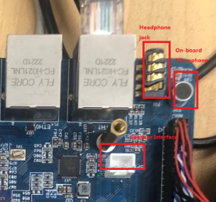
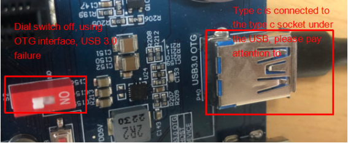
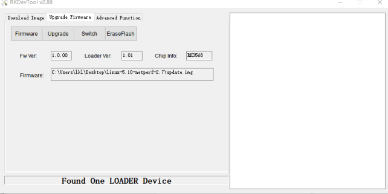

Linux5.10.160_User’s Manual
Document classification: □ Top secret □ Secret □ Internal information ■ Open
Copyright
The copyright of this manual belongs to Baoding Folinx Embedded Technology Co., Ltd. Without the written permission of our company, no organizations or individuals have the right to copy, distribute, or reproduce any part of this manual in any form, and violators will be held legally responsible.
Forlinx adheres to copyrights of all graphics and texts used in all publications in original or license-free forms.
The drivers and utilities used for the components are subject to the copyrights of the respective manufacturers. The license conditions of the respective manufacturer are to be adhered to. Related license expenses for the operating system and applications should be calculated/declared separately by the related party or its representatives.
Application Scope
This manual is mainly applicable to the Linux5.10.160 operating system on the Forlinx OK3568-C platform. Other platforms can also refer to it, but there will be differences between different platforms. Please make modifications according to the actual conditions.
Revision History
Date |
User Manual Version |
Revision History |
|---|---|---|
24/11/2023 |
V1.0 |
OK3568-C Linux5.10.160+QT5.15.8_User’s Manual Initial Version |
11/12/2023 |
V1.1 |
1. Removing the Forlinx user from FTP, and the file system has not been added yet; |
15/05/2024 |
V2.0 |
1. Adding FET3568-C2, OK3568-C2C configuration; |
04/07/2025 |
V2.1 |
4.2.22 休眠唤醒测试章节添加长鑫内存已将休眠唤醒功能去掉内容。 |
15/10/2025 |
V2.2 |
Adding notes in the WIFI test chapter and the quick startup chapter (The antenna must be connected for startup, otherwise the startup may be affected). |
Overview
OK3568-C/C2C development board currently provides software documentation for the Linux operating system. This document is the Linux software manual, focusing on relevant functionality testing and explanations for the Linux5.10.160 kernel. Please choose the documentation that matches the image installed on the development board for the operations. You can access the documentation and source code of the software and hardware through the web link provided by Forlinx. Please ask your sales representative for the download link.
Note:
The OK3568 - C/C2C development board is pre - flashed with a Linux image by default at the factory. Before operating, please confirm whether the system is Linux. If not, please re - flash the Linux image. Refer to the “System Flashing” section for the flashing method. After the flashing is completed, you can check the kernel version information through the steps in the “Serial Port Login” section;
For detailed information, refer to the OK3568 - C/C2C user documentation. In this document, the directory of the user documentation mentioned is based on the root directory of the OK3568 - C/C2C user documentation.
1. OK3568-C/C2C Development Board Description
RK3568 is a low-power high-performance processor based on ARM64 architecture. It includes 4-core Cortex-A55 and independent NEON co-processor and neural network plus processor NPU. It can be applied to computers, mobile phones, personal mobile Internet and digital multimedia devices.
FET3568-C and FET3568-C2 SoM have the same pin definition and can share a common carrier board. When FET3568-C is combined with the OK3568-C carrier board, the development board name is OK3568-C development board; when FET3568-C2 is combined with the OK3568-C carrier board, the development board name is OK3568-C2C development board.
The connection between SoM and the carrier board is board-to-board, and the main interfaces are shown as follows:

Front
Back
Note:
This software manual does not describe the hardware parameters. Before referring to this manual for software development, please read “OK3568-C & OK3568-C2C _ Hardware Manual” under the path of “Hardware Data \ User Manual” to understand the product naming rules and the hardware configuration information of the product you use, which is helpful for you to use this product.
1.1 Linux 5.10.160 System Software Resources Features
Device |
Location of driver source code in the kernel |
Device Name |
|---|---|---|
LCD Backlight Driver |
drivers/video/backlight/pwm_bl.c |
/sys/class/backlight |
USB Port |
drivers/usb/storage/ |
|
USB Mouse |
drivers/hid/usbhid/ |
/dev/input/mice |
Ethernet |
drivers/net/ethernet/stmicro/stmmac |
|
SD/micro TF card driver |
drivers/mmc/host/dw_mmc-rockchip.c |
/dev/block/mmcblk1pX |
EMMC Driver |
drivers/mmc/host/dw_mmc-rockchip.c |
/dev/block/mmcblk2pX |
OV13850 |
drivers/media/i2c/ov13850.c |
/dev/videoX |
LCD Controller |
drivers/gpu/drm/rockchip/rockchip_drm_vop.c |
|
MIPI CSI |
drivers/phy/rockchip/phy-rockchip-mipi-rx.c |
|
MIPI DSI |
drivers/phy/rockchip/phy-rockchip-inno-mipi-dphy.c |
|
LCD Touch Driver |
drivers/input/touchscreen/gt9xx/* |
/dev/input/eventX |
RTC Real Time Clock Driver |
drivers/rtc/rtc-rx8010.c |
/dev/rtc0 |
Serial Port |
drivers/tty/serial/8250/8250_dw.c |
/dev/ttySX |
Key Driver |
drivers/input/keyboard/adc-keys.c |
/dev/input/eventX |
LED |
drivers/leds/leds-gpio.c |
|
I2S |
sound/soc/rockchip/rockchip_i2s.c |
|
Audio Driver |
sound/soc/codecs/rk817_codec.c |
/dev/snd/ |
PMIC |
drivers/mfd/rk808.c |
|
PCIE |
drivers/pci/controller/pcie-rockchip.c |
|
Watchdog |
drivers/watchdog/dw_wdt.c |
|
SPI |
drivers/spi/spi-rockchip.c |
1.2 EMMC Memory Partition Table
The following table shows the eMMC memory partition information for the Linux operating system (calculated with a block size of 512bit):
Partition Index |
Name |
Offset / block |
Size/block |
content |
|---|---|---|---|---|
N/A |
loader |
0x00000000 |
0x00003fc0 |
MiniLoaderAll.bin |
1 |
uboot |
0x00004000 |
0x00002000 |
uboot.img |
2 |
misc |
0x00006000 |
0x00002000 |
misc.img |
3 |
boot |
0x00008000 |
0x00020000 |
boot.img |
4 |
recovery |
0x00028000 |
0x00040000 |
recovery.img |
5 |
backup |
0x00068000 |
0x00010000 |
backup.img |
6 |
rootfs |
0x00078000 |
0x00c00000 |
rootfs.img |
7 |
oem |
0x00c78000 |
0x00040000 |
oem.img |
8 |
userdata |
0x00cb8000 |
the all left |
userdata.img |
The partition size can be viewed on the development board using the fdisk -l command:
root@OK3568-buildroot:/# fdisk –l
Found valid GPT with protective MBR; using GPT
Disk /dev/mmcblk0: 15269888 sectors, 3360M
Logical sector size: 512
Disk identifier (GUID): b0640000-0000-493c-8000-1e08000019fe
Partition table holds up to 128 entries
First usable sector is 34, last usable sector is 15269854
Number Start (sector) End (sector) Size Name
1 16384 24575 4096K uboot
2 24576 32767 4096K misc
3 32768 163839 64.0M boot
4 163840 425983 128M recovery
5 425984 491519 32.0M backup
6 491520 13074431 6144M rootfs
7 13074432 13336575 128M oem
8 13336576 15269854 943M userdata
2. Fast Startup
2.1 Preparation Before Startup
12V2A or 12V3A DC Power Cable
Debugging serial cable
Note: Be sure to install the Wifi antenna when startup.
2.2 Debugging Serial Driver Installation
The debugging serial port of the OK3568-C - C platform uses a Type - C interface. There is an on - board USB to UART chip, so there’s no need to purchase a USB to serial port debugging tool. It is extremely simple and convenient to use.
To install the driver, please use the driver package CP210x _ VCP _ Windows _ XP _ Vista. Zip provided in the \ Linux \ Tools \ directory of the user profile.
Select to run CP210xVCPInstaller _ x86.exe for 32-bit operating system and CP210xVCPInstaller _ x64.exe for 64-bit operating system after decompression.
2.3 Serial Port Login
2.3.1 Serial Port Connection Settings
Description:
Serial port terminal login user: serial port terminal automatically logs in (user: root, password root);
Serial port settings: Baud rate 115200, 8 data bits, 1 stop bit, no parity bit, no flow control;
Hardware Requirements: Type-C cable required to connect PC and development boards;
Software requirements: PC Windows system needs to install the super terminal software. Because the terminal software has many types, users can choose their familiar one.
In the following, we take the putty terminal software as an example to introduce the serial port login method:
Step 1: Connect the serial port number of the computer—check the serial port number from the device manager (Based on the port actually recognized by the computer );

Step 2: Open and set up putty, then set the“ line according to the COM port of the computer used, baud rate 115200;

Step 3: After the setting, input the COM port used by the computer in Saved Sessions. The following figure takes COM24 as an example, save the settings, open the serial port again later, and click on the saved port number;

2.3.2 Serial Login
After the terminal software on the PC side is set, connect the PC and the development board through the serial port cable, and power on after connecting the power supply. The startup information can be seen through the terminal software.
The following startup message indicates a successful start, allowing a new command line to be entered by pressing Enter:
Note: If the prompt shows [root@buildroot]#, it indicates that this is the first reboot after the initial flashing is completed, and the system is currently writing some information. During this process, please do not perform any operations. Only when the system reboots automatically again does it mean the flashing is finished. [root@OK3568-buildroot]#That’s the normal state. This can be viewed through the uboot boot information.
First boot, recovery mode:
Normal boot:

2.4 Network Login
In addition to logging in via the debugging serial port, the OK3568 supports SSH network login to the development board and also supports FTP file transfer. The following example uses an IP address of 172.16.0.76 for the development board to illustrate the use of network tools. To modify the network IP, use the command “ifconfig eth0 172.16.0.76”. The development board and PC should be connected to the same switch or directly connected via an Ethernet cable.
2.4.1 SSH
OK3568 development board supports SSH service and automatically starts it during boot up. After setting the IP address, the board can be used as an SSH server. You can log in to the development board via SSH for development and debugging, as well as use scp for file transfer.
Note:
When logging in, enter the root username and the root password as prompted. If you wish to log in as the root user via SSH, you must first set a login password for the root user. To do this, log in to the development board via the serial port and use the passwd “username” command to change the login password for the specified user. There will be a password strength prompt, which can be ignored and has no effect on password changes;
The following test is based on the development board IP address 172.16.0.76. Please modify it according to your actual situation. Use the command “ifconfig eth0 172.16.0.76” on the debugging serial terminal to make the change.
Open the putty software and make the following settings (the actual IP shall prevail):

2.4.2 FTP
OK3568 development board supports FTP service and automatically starts when powered on. Once you’ve set the IP address, it can be used as an FTP server. The following describes how to utilize the FTP tool for file transfer.
Path: OK3568-C (Linux) user profile\tool\FileZilla*
Install the file Zilla tool on windows and set it up as shown in the following figure.
**Note: **
This function requires the development board to be connected to the network cable; the host IP is set in the same network segment as the client, ensuring that the host and the client are in the same LAN; username root, password root; after successful login, you can upload, download and delete files anywhere in the file system. In general, it is not recommended to use root to log in to FTP. Please set the user login according to the actual situation;
The following test is based on the development board IP address 172.16.0.76. Please modify it according to your actual situation. Use the command ‘ifconfig eth0 172.16.0.76’ on the debugging serial terminal to make the change.


2.5 Screen Switching
The OK3568 supports multiple screen interfaces such as LVDS/LCD, MIPI DSI/eDP, and HDMI, enabling the same or different content to be displayed on three screens simultaneously. Currently, there are three ways to control screen switching: first, dynamic control via the U-Boot menu; second, specification in the kernel device tree; third, control using the Qt application Ubootmenu.
Note: Screen switching involves touch - screen switching. In the factory - installed image, the LVDS, MIPI, and HDMI interfaces all output video images by default. The touch function is set to the LVDS screen by default. If you want to use the MIPI touch screen, please turn off the LVDS screen output during the screen selection stage.
2.5.2 Kernel Device Tree Specification
This method does not require the connection of a serial terminal, and the system image defaults to the desired configuration selection, which is suitable for mass production. However, we need to manually modify the device tree and regenerate the system image once again
Note: This method has higher priority than the uboot screen selection, and the uboot selection will not take effect after the device tree is modified.
The device tree path: kernel/arch/arm64/boot/dts/rockchip/OK3568-C-common.dtsi
In the kernel source code, open the device dtsi file and find the following node:

The node has a default disabled state and needs to be changed to an okay enabled node. Change according to screen requirements.
Examples:
Close the hdmi, lvds screens, change the attribute to “off”, and use edp to change the corresponding attribute to edp.

After saving, recompile to generate the image.
There are many types of MIPI screens, and the existing timing and control words may not meet the requirements, so it is necessary to change the display-timings under the dsi node. However, any node status attribute related to display is handled by default, and the program will automatically control it.
2.6 System Shutdown
In general, you can turn off the power directly, but avoid doing so during important operations like data storage or usage to prevent irreversible file damage. Damaged files may require firmware rewrite. To ensure that data is not completely written, enter the sync command to complete data synchronization before turning off the power.
Note: For products designed based on the SoM, if there are scenarios where accidental power loss causes the system to shut down unexpectedly, measures such as adding power-loss protection can be incorporated into the design.
3. OK3568 Platform Function Test
OK3568 platform has perfect support for Qt, especially for multimedia related classes, such as video decoding and playback, camera, video recording, etc., which can be combined with hardware codec and OpenGL to achieve the best results.
3.1 Interface Function Test
3.1.1 Introduction to Interface Functions
The desktop is displayed as follows after the development board booting:
3.1.2 Introduction to Touch Functions
The LVDS and MIPI screen connected to the development board can be displayed and touched normally. If it is necessary to turn off a display touch, please refer to the manual 2.5.1 Uboot Menu Dynamic Control to turn off the corresponding display output.
3.1.3 Hardware Decoding Experience
Click the desktop icon to open the video player.

Application Icons

Application Interfaces
3.1.4 Camera Test
Click the desktop icon to open the video player qcamera. The test program supports USB Camera and OV13850. Plug in a USB Camera, using the RMONCAM 720P as an example.
Note: The app needs to be connected to the camera before opening.
Application Icons

Application Interfaces
After opening the application, click UVC Camera to start the camera preview.

In Video Mode, you can click the record button to record, and click the recording button to stop recording. The generated video file is located in /userdata/VIDEO0.MOV.
Playback tests can be performed using the gst-play-1.0/userdata/VIDEO0.mov command.
Click the Video Mode button to switch to the photo mode, and click Capture to take a photo.

The generated file is located in the/userdata path:
For raw sensors such as OV13850, each sensor corresponds to 5 device nodes:

Mainpath, refers to an output node of Rockchip ISP, which can output full-resolution images, generally used to take photos and capture Raw images.
Self Path, refers to an output node of Rockchip ISP, which can only output up to 1080p resolution and is usually used for preview.
Statistics for 3A statistics.
Input-params for 3A parameter setting.
3.1.5 OpenGL Test
OK3568 supports OpenGL ES3.2; click the desktop icon for OpenGL test.
Application Icons
Application Interfaces
3.1.6 Music Play Test
“music player” is a simple audio test application that can be used to test the function of the sound card or as a simple audio player.

Application Icons
Application Interfaces
Click the button in the lower left corner and select test audio /userdata/media/test.mp3
Note: The default sound card output is rk809. If using HDMI output, please use the command on the serial port:
root@OK3568-buildroot:/# gst-play-1.0/userdata/media/test.mp3 --audiosink="alsasink device=hw:1,0"
3.1.7 Record Test
The Audio recorder “is a recording test application that can be used to test whether the recording function of the sound card is normal:
Application Icons

Application Interfaces
Click the drop-down menu to select the input device, audio format and audio channel, click the output file dir text box to input the output path and name of the recording file, select audio/ogg for File Container, select channel number 1 for Channels, and set the rest by default. Click Record to start recording. Recorded audio files can be played using gst-play-1.0. Click Exit to exit the test.
3.1.8 4G/5G Test
This test requires an Internet-capable SIM card, a description of which can be found in the Command Line Functional Tests 5G section of this manual.
The “4G/5G” test program is used to test the OK3568 external 5G module (RM500U). Before testing, please power off the development board, access the 5G module, insert the SIM card, start the development board, and open the test application.
Meanwhile, the test supports the 4G module (EM05-CE), inserts the 4G module and SIM card in the case of power failure, and opens the test application after powering up the system to start.

Application Icons
Application Interfaces
Click the connect button, the program will automatically enter the dialing process and get the IP settings, DNS, etc. Wait patiently for a few seconds, and then click the ping button to test.
3.1.9 WIFI Test
“WIFI” is a tool to configure wifi. The OK3568 platform has the AW-CM358 module on board by default. The wifi module exists in the system as a mlan node, and this test corresponds to mlan0 (other corresponding nodes are used for multiple devices):
Note: Be sure to install the Wifi antenna when startup.

Application Icons
Application Interfaces
Select mlan0, enter the router name (the one connected to wifi) in the SSID column, enter the router password in the PAWD column, click CONNECT to the router via wifi, enter a valid ip in the IP column, and then click ping to see if the currently used wifi network is smooth.
By default, the AW-CM358 module is soldered to the OK3568 backplane, and only the mlan0 node is soldered. Take mlan0 as an example to demonstrate the use of the wifi tool.
Open the Wifi test app, enter the correct network name and password, click CONNECT, wait 5 seconds, and click STATUS to view the connection ledge.
After the connection is successful, click ping to test the network.
3.1.10 Network Configuration Test
When the OK3568 starts up, the default setting of the NIC is dhcp. The two modes of dhcp and static can be selected through the “Network” configuration application, and the static mode can be configured with ip address, subnet mask, gateway, and DNS.
Application Icons
The interface is as follows:
Select eth0 or eth1, then select DHCP, and click “Application” at the bottom of the interface to restart the network and automatically obtain IP.
Click STATIC, select Set Static IP, enter the IP to be set in the IP column, enter the subnet mask in the netmask column, enter the gateway in the getaway column, and enter the DNS in the DNS column.
After entering the URL and clicking the ping key, the result of the ping will prompt on the left, as follows:
Note: Information such as ip set in STATIC mode is saved to the relevant configuration file of the system so each reboot will use the network information set this time; network information configured in DHCP mode, on the other hand, does not need to care about this; ip addresses are dynamically assigned every reboot.
3.1.11 Browser Tests
“Simplebrowser” is a simple and practical web browser. Please ensure smooth network connection when using it, and make sure DNS is available before accessing external websites. By default, the browser launches and accesses the official website of Forlinx Embedded. Click the icon:

The interface is as follows:
Note: If the development board time is abnormal, it will cause certificate problems. Do not shut down the power immediately after using the browser or the sync command at the command line. Otherwise, it may cause the browser to exit abnormally and not work properly, and can only be solved by re-burning.

Exit this browser via the upper navigation bar File->Quit.
3.1.12 Watchdog Tests
“WatchDog” is an application used to test the watchdog status.

Application Icons
Application Interfaces
Click start to open the dog feeding function by default and feed the dog regularly. At this time, the system will not restart.
When unchecking feed dog, count down 6s and the system enters reboot. It indicates that the Watchdog function is normal.
3.1.13 Key Tests
The “Keypad” is used to test whether the platform’s own keys are available:
Application Icons

Application Interfaces
By default, OK3568 platform configures the four physical buttons V+, V-, Home, and ESC as the Volume + and Volume - keys, Home, and Return keys, respectively. The corresponding key in the test application will turn blue when pressing the key, indicating that the key is in normal status.
Press “X” to exit the current routine and return to the system desktop.
3.1.14 RTC Test
The “RTC” application allows you to view and set the current system time:

Application Icons
Application Interfaces
After selecting “Manual,” you can manually set the time by choosing “date” and “time,” then click “apply” to complete the settings. With the RTC backup battery installed, the time will not be lost in case of a power outage and reboot.
Click Auto to perform network timing, and click apply to perform timing successfully.
3.1.15 SPI Test
Click on the desktop icon to use it to test the OK3568 on-board SPI interface. Spi0 has one CS interface, corresponding to the/dev/spidev 0.0; spi2 has two CS interfaces, corresponding to/dev/spidev2.0 and/dev/spidev2.1, respectively.
Short the spi2 T/R pins according to the board schematic. The short circuit test does not need to consider the CS interface; if additional equipment is used for communication, the corresponding dev interface needs to be considered.

Application Icons

Open the test program after the completion of short circuit, and click the send button to conduct the sending and receiving test.

Application Interfaces
Click the Exit button to exit the test.
3.1.16 UART Test
Click on the desktop icon to use it to test the OK3568 on-board UART interface.

Application Icons
OK3568 serial port supports odd and even parity, 8 data bits and 1 stop bit.
Please short the serial port to be tested before the serial port loopback test. UART3, UART4, UART5 and UART8 serial ports are indicated in the schematic diagram of OK3568 platform carrier board, in which UART2 is the debugging serial port and UART8 is the Bluetooth serial port. The default device names of UART3, UART4 and UART5 in the development board are ttyS3, ttyS4 and ttyS5 respectively. Here, take the test of UART4 serial port as an example. According to the schematic diagram of the development board, the transceiver pins of UART4 are short-circuited, corresponding to PIN29 and PIN30 respectively.
Turn on the test program after the short circuit is completed.
Click Settings on the right, select parameters such as serial port and baud rate, and click apply. Set parameter successfully. Then click the first button on the right to connect.

Application Interfaces
Click the keyboard “1” to send automatically. Due to the problem of short circuit, the received “1” will also be displayed on the terminal.
3.1.17 Backlight Test
“BackLight” is the lcd backlight adjustment application:

Application Icons

Application Interfaces
Drag the slider in the interface to set the Lcd backlight brightness, level 0 is no backlight, level 255 is the highest level.
3.1.18 CPU Frequency Configuration Test
Click the desktop icon to enter the next menu:
 ->
->
Application Icons
The main frequency of OK3568 CPU is up to 1.9 Ghz. By default, the CPU will dynamically adjust the main frequency according to the load. The main frequency of the CPU can also be fixed by setting. Click the desktop Power icon to enter the CPU frequency setting page:

Set Userspace Governor: Set the main frequency in the user mode
Set Frequency A55: Set the main frequency
Take the setting of main frequency as an example. If it is necessary to set a fixed frequency, please click Set Userspace Governor, click run, return to the operation interface as shown in the figure above, and click Set Frequency A55 to set.

Select the corresponding frequency for setting according to the requirements.
4. OK3568 Command Line Function Test
4.1 Command Line Function Test
The OK3568 platform has various built-in command line tools available to users.
4.1.1 System Information Query
To view kernel and CPU information:
root@OK3568-buildroot:/# uname -a
Linux OK3568-buildroot 5.10.160 #1 SMP Fri Oct 13 08:48:42 HKT 2023 aarch64 GNU/Linux
View operating system information:
root@OK3568-buildroot:/# cat /etc/issue
Welcome to RK3566_RK3568 Buildroot
View environment variable information:
root@OK3568-buildroot:/# env
SHELL=/bin/bash
GST_V4L2_PREFERRED_FOURCC=NV12:YU12:NV16:YUY2
GST_VIDEO_CONVERT_PREFERRED_FORMAT=NV12:NV16:I420:YUY2
SEATD_VTBOUND=0
PIXMAN_USE_RGA=1
UMS_RO=0
CHROMIUM_FLAGS=--enable-wayland-ime
GST_V4L2_USE_LIBV4L2=1
UMS_MOUNTPOINT=/mnt/ums
GST_INSPECT_NO_COLORS=1
UMS_MOUNT=0
PULSE_HOME=/userdata/.pulse
QT_GSTREAMER_WINDOW_VIDEOSINK=waylandsink
EDITOR=/bin/vi
GST_DEBUG_NO_COLOR=1
PWD=/
LOGNAME=root
PREFERED_VIDEOSINK=waylandsink
UMS_SIZE=256M
HOME=/root
LANG=en_US.UTF-8
ADB_TCP_PORT=5555
WESTON_FREEZE_DISPLAY=/tmp/.freeze_weston
QT_GSTREAMER_WIDGET_VIDEOSINK=waylandsink
WAYLANDSINK_FORCE_DMABUF=1
GST_V4L2SRC_DEFAULT_DEVICE=/dev/video-camera0
TERM=vt100
USER=root
UMS_FILE=/userdata/ums_shared.img
AUTOAUDIOSINK_PREFERRED=pulsesink
ADBD_SHELL=/bin/bash
GST_V4L2SRC_RK_DEVICES=_mainpath:_selfpath:_bypass:_scale
WESTON_DRM_MIRROR=1
UMS_FSTYPE=vfat
SHLVL=1
GST_VIDEO_FLIP_USE_RGA=1
USB_FUNCS=adb
QT_GSTREAMER_PLAYBIN=playbin3
WESTON_DISABLE_ATOMIC=1
XDG_RUNTIME_DIR=/var/run
PLAYBIN2_PREFERRED_AUDIOSINK=pulsesink
GST_VIDEO_CONVERT_USE_RGA=1
PATH=/usr/bin:/usr/sbin
QTWEBENGINE_CHROMIUM_FLAGS=--no-sandbox --disable-es3-gl-context --ignore-gpu-blacklist --ignore-gpu-blocklist --enable-accelerated-video-decode
GST_V4L2SRC_MAX_RESOLUTION=3840x2160
_=/usr/bin/env
OLDPWD=/root
4.1.2 FM Test
Note: This process takes cpu0 as an example, and the actual process of cpu1, cpu2, and cpu3 will be changed at the same time.
1. All cpufreq governor types supported in the current kernel:
root@OK3568-buildroot:/# cat /sys/devices/system/cpu/cpu0/cpufreq/scaling_available_governors
conservative ondemand userspace powersave interactive performance
The userspace indicates user mode, in which other users’ programs can adjust the CPU frequency.
2.\ To view the frequency gear supported by the current CPU;
root@OK3568-buildroot:/# cat /sys/devices/system/cpu/cpu0/cpufreq/scaling_available_frequencies
408000 600000 816000 1104000 1416000 1608000 1800000 1992000
3. Set to user mode and modify the frequency to 1800000:
root@OK3568-buildroot:/# echo userspace > /sys/devices/system/cpu/cpu0/cpufreq/scaling_governor
root@OK3568-buildroot:/# echo 1800000 > /sys/devices/system/cpu/cpu0/cpufreq/scaling_setspeed
View the modified current frequency:
root@OK3568-buildroot:/# cat /sys/devices/system/cpu/cpu0/cpufreq/cpuinfo_cur_freq
1800000
4.1.3 Temperature Test
View the temperature value:
root@OK3568-buildroot:/# cat /sys/class/thermal/thermal_zone0/temp
56111
The temperature value is 56°C.
4.1.4 DDR Bandwidth Test
root@OK3568-buildroot:/# memory_bandwidth.sh
Take OK3568-C as an example. As follows：
The OK3568-C has a DDR4 write bandwidth of about 1480M/s and a read bandwidth of about 5100M/s.
4.1.5 Key Tests
Use the keytest command line tool to test the keys. At present, keytest supports the test of the four keys V +, V-, Home and ESC on the backplane, and the key codes are 115, 114, 139 and 158 respectively. At this point, press the lift button in sequence, and the following can be output on the terminal:
Execute the following command:
root@OK3568-buildroot:/# fltest_keytest
Available devices:
/dev/input/event2: adc-keys
key115 Presse
key115 Released
key114 Presse
key114 Released
key139 Presse
key139 Released
key158 Presse
key158 Released
4.1.6 Serial Port Test
OK3568 serial port supports odd and even parity, 8 data bits and 1 stop bit.
Please short the serial port to be tested before the serial port loopback test. In the schematic diagram of the OK3568 platform, UART2, UART3, UART4, UART5, and UART8 are indicated as 5 serial ports, with UART2 being the debug port and UART8 being the Bluetooth port. The serial ports available to the user are UART3, UART4 and UART5, and the corresponding device names in the development board are ttyS3, ttyS4 and ttyS5. Take the test of UART4 serial port as an example, short-circuit the receiving and transmitting pins of UART4 according to the schematic diagram of the development board, corresponding to PIN29 and PIN30 respectively.

Turn on the test program after the short circuit is completed.
root@OK3568-buildroot:/# fltest_uarttest -d /dev/ttyS4
Welcome to uart test
Send test data:
forlinx_uart_test.1234567890...
Read Test Data finished,Read:
forlinx_uart_test.1234567890...
If the serial port prints the above content after execution, it indicates that the serial port communication is basically normal.
4.1.7 SPI Test
2 x SPI interfaces are led out from the OK3568 carrier board, which are configured as spidev in the default software for loopback test. When testing, refer to the schematic for shorting MOSI (PIN15) and MISO (PIN16), and then use the commands below to test each.

Without shorting the SPI 2_ MOSI and the SPI 2_ MISO, execute the test command:
root@OK3568-buildroot:/# fltest_spidev_test -D /dev/spidev2.0
spi mode: 0x0
bits per word: 8
max speed: 500000 Hz (500 KHz)
FF FF FF FF FF FF
FF FF FF FF FF FF
FF FF FF FF FF FF
FF FF FF FF FF FF
FF FF FF FF FF FF
FF FF FF FF FF FF
FF FF
Short circuit the SPI 2_ MOSI to the SPI 2_ MISO and execute the test command:
root@OK3568-buildroot:/# fltest_spidev_test -D /dev/spidev2.0
spi mode: 0x0
bits per word: 8
max speed: 500000 Hz (500 KHz)
FF FF FF FF FF FF
40 00 00 00 00 95
FF FF FF FF FF FF
FF FF FF FF FF FF
FF FF FF FF FF FF
DE AD BE EF BA AD
F0 0D
4.1.8 Watchdog Tests
Watchdog is a function often used in embedded systems. The device node of watchdog in OK3568 is/dev/watchdog. This test provides two test procedures, and the user can choose one of them to test according to the actual situation.
4.1.8.1 Start the fltest _ watchdog, set the time as 10s, and feed the dog regularly.
root@OK3568-buildroot:/# fltest_watchdog
Watchdog Ticking Away!
This command turns on the watchdog and performs a feed, so the system does not reboot.
Note: When ctrl + C is used to end the test program, the system will reset after 10 seconds. If you do not want to reset, please input within 10 seconds after ctrl + C:
root@OK3568-buildroot:/# fltest_watchdog -d
Watchdog card disabled. //Turn off the watchdog
4.1.8.2 Start the fltest _ watchdog restart, set the reset time to 10 s, and do not feed the dog.
root@OK3568-buildroot:/# fltest_watchdogrestart
Restart after 10 seconds
This command turns on the watchdog, but does not feed the dog, and the system reboots after 10 seconds.
4.1.9 WIFI Test
The OK3568 supports the onboard AW-CM358 by default and supports STA and AP modes.
4.1.9.1 STA Mode
Before using the wifi function, the following steps are required for configuration:
Step 1:
Assume that the SSID name of the Wifi hotspot is ChinaNet-Jvgv and the password is asdasd123
Enter the following command in the development board terminal:
root@OK3568-buildroot:/# fltest_wifi.sh -i mlan0 -s "ChinaNet-Jvgv" -p asdasd123
In the above command,
The specific assignment of “wlan0” or “wlan1” to a particular module needs to be determined before use, and it depends on the actual situation.
-s The actual wifi hotspot name of the connection;
-p followed by the parameter Password refers to the password of the actual wifi hotspot to be connected. If the current hotspot does not have a password, the parameter after -p is NONE.
Step 2:
Check whether it can ping the external network and enter the following command in the terminal:
root@OK3568-buildroot:/# ping www.forlinx.com
PING www.forlinx.com (220.181.111.188): 56 data bytes
64 bytes from 220.181.111.188: seq=0 ttl=57 time=5.562 ms
64 bytes from 220.181.111.188: seq=1 ttl=57 time=5.884 ms
64 bytes from 220.181.111.188: seq=2 ttl=57 time=4.595 ms
64 bytes from 220.181.111.188: seq=3 ttl=57 time=4.323 ms
64 bytes from 220.181.111.188: seq=4 ttl=57 time=4.682 ms
64 bytes from 220.181.111.188: seq=5 ttl=57 time=3.798 ms
If you want to stop, you need to press Ctrl + C to ping, indicating that the network can be used normally at this time.
4.1.9.2 AP Mode
Before using the hotspot function, you need to connect and configure the network port to ensure that the network port can be connected to the Internet. Configure the hotspot command. The command AP becomes DISABLED in the first pass, and becomes ENABLE in the second pass, as shown below:
root@OK3568-buildroot:/# fltest_hostapd.sh
killall: hostapd: no process killed
Stopping dnsmasq: FAIL
Starting dnsmasq: Configuration file: /etc/hostapd-2.4g.conf
Using interface uap0 with hwaddr ea:fb:1c:67:09:af and ssid "OK3568_WIFI_2.4G_AP"
[ 75.916321] wlan: Starting AP
OK
root@OK3568-buildroot:/# [ 75.917730] fw doesn't support 11ax
[ 75.925842] CMD_RESP: cmd 0xb1 error, result=0x1
Failed to set beacon parameters
[ 75.925876] IOCTL failed: 0000000023c4c37b id=0x20000, sub_id=0x20001 action=1, status_code=0x1
Interface initialization failed
[ 75.925901] woal_cfg80211_add_beacon: start uap failed
uap0: interface state UNINITIALIZED->DISABLED
uap0: AP-DISABLED
uap0: Unable to setup interface.
uap0: interface state DISABLED->DISABLED
uap0: AP-DISABLED
uap0: CTRL-EVENT-TERMINATING
hostapd_free_hapd_data: Interface uap0 wasn't started
nl80211: deinit ifname=uap0 disabled_11b_rates=0
root@OK3568-buildroot:/# fltest_hostapd.sh
killall: hostapd: no process killed
Stopping dnsmasq: OK
Starting dnsmasq: Configuration file: /etc/hostapd-2.4g.conf
Using interface uap0 with hwaddr ea:fb:1c:67:09:af and ssid "OK3568_WIFI_2.4G_AP"
[ 82.878776] wlan: Starting AP
[ 82.880177] fw doesn't support 11ax
[ 82.890603] wlan: AP started
[ 82.890785] IPv6: ADDRCONF(NETDEV_CHANGE): uap0: link becomes ready
OK
[ 82.896832] Set AC=3, txop=47 cwmin=3, cwmax=7 aifs=1
root@OK3568-buildroot:/# uap0: interface state UNINITIALIZED->ENABLED
[ 82.899399] Set AC=2, txop=94 cwmin=7, cwmax=15 aifs=1
uap0: AP-ENABLED
[ 82.901643] Set AC=0, txop=0 cwmin=15, cwmax=63 aifs=3
[ 82.903627] Set AC=1, txop=0 cwmin=15, cwmax=1023 aifs=7
WiFi Hotspot Name: forlinx
Password: 12345678
At this time, the mobile phone can connect to this hotspot and connect to the Internet.
4.1.10 Bluetooth Test
The AW-CM358 of the OK3568 carrier board has integrated Bluetooth. This section demonstrates the use of Bluetooth for file transfer between the phone and the development board.
root@OK3568 - buildroot:/# bluetoothctl // Open the BlueZ Bluetooth tool
Agent registered
[bluetooth]# power on // Start the Bluetooth device
[CHG] Controller 36:DC:25:54:7C:CB Class: 0x00100000
Changing power on succeeded
[CHG] Controller 36:DC:25:54:7C:CB Powered: yes
[bluetooth]# pairable on // Set to pairing mode
Changing pairable on succeeded
[bluetooth]# discoverable on // Set to discoverable mode
Changing discoverable on succeeded
[CHG] Controller 36:DC:25:54:7C:CB Discoverable: yes
[bluetooth]# agent on // Start the agent
Agent is already registered
[bluetooth]# default - agent
Default agent request successful
// At this time, turn on the Bluetooth on your phone to scan. If it fails to scan for a long time, please repeat the operation.
[bluetooth]# discoverable on // Set the current agent as the default
// Click on "BlueZ 5.50" to pair. Perform password verification on both the phone and the development board, and select "YES".
[NEW] Device C4:FE:5B:17:C7:78 OPPO Reno3 Youth Edition 5G
Request confirmation
[agent] Confirm passkey 508432 (yes/no): yes
[CHG] Device C4:FE:5B:17:C7:78 Modalias: bluetooth:v001Dp1200d1436
[CHG] Device C4:FE:5B:17:C7:78 UUIDs: 00001105 - 0000 - 1000 - 8000 - 00805f9b34fb
[CHG] Device C4:FE:5B:17:C7:78 UUIDs: 0000110a - 0000 - 1000 - 8000 - 00805f9b34fb
[CHG] Device C4:FE:5B:17:C7:78 UUIDs: 0000110c - 0000 - 1000 - 8000 - 00805f9b34fb
[CHG] Device C4:FE:5B:17:C7:78 UUIDs: 0000110e - 0000 - 1000 - 8000 - 00805f9b34fb
[CHG] Device C4:FE:5B:17:C7:78 UUIDs: 00001112 - 0000 - 1000 - 8000 - 00805f9b34fb
[CHG] Device C4:FE:5B:17:C7:78 UUIDs: 00001115 - 0000 - 1000 - 8000 - 00805f9b34fb
[CHG] Device C4:FE:5B:17:C7:78 UUIDs: 0000111f - 0000 - 1000 - 8000 - 00805f9b34fb
[CHG] Device C4:FE:5B:17:C7:78 UUIDs: 0000aa15 - 0000 - 1000 - 8000 - 00805f9b34fb
[CHG] Device C4:FE:5B:17:C7:78 UUIDs: 00001235 - 95c - 9f4f - bb80a90cdf00
[CHG] Device C4:FE:5B:17:C7:78 ServicesResolved: yes
[CHG] Device C4:FE:5B:17:C7:78 Paired: yes
[CHG] Controller 36:DC:25:54:7C:CB Discoverable: no
[CHG] Device C4:FE:5B:17:C7:78 ServicesResolved: no
[CHG] Device C4:FE:5B:17:C7:78 Connected: no
After successful pairing, you can share files from your phone to the development board via Bluetooth.
Type quit to exit bluetoothctl. The received file is located in the/root directory.
[bluetooth]# quit
root@OK3568-buildroot:/# ls /root/
wx_camera_1581992646090.jpg
At the same time, you can also send the files on the development board to the mobile phone.
root@OK3568-buildroot:/# fltest_obexctl.sh
[obex]# connect C4:FE:5B:17:C7:78
Attempting to connect to C4:FE:5B:17:C7:78
[NEW] Session /org/bluez/obex/client/session0 [default]
[NEW] ObjectPush /org/bluez/obex/client/session0
Connection successful
[C4:FE:5B:17:C7:78]# send /home/forlinx/audio/test.mp3
Attempting to send /home/forlinx/audio/test.mp3 to /org/bluez/obex/client/session0
[NEW] Transfer /org/bluez/obex/client/session0/transfer0
Transfer /org/bluez/obex/client/session0/transfer0
Status: queued
Name: test.mp3
Size: 4818092
Filename: /home/forlinx/audio/test.mp3
Session: /org/bluez/obex/client/session0
[CHG] Transfer /org/bluez/obex/client/session0/transfer0 Status: active
[CHG] Transfer /org/bluez/obex/client/session0/transfer0 Transferred: 8046 (@8KB/s 09:57)
Note: The files received by some manufacturers’ mobile phones must have suffixes, otherwise they will be rejected by the Android system. Therefore, when testing, please try to use files with suffix names for testing.
4.1.11 RTC Function Test
RTC testing is mainly done by using the date and hwclock tools to set the software and hardware time. The test checks if the software clock can read and synchronize with the RTC clock when the development board is powered off and on again (Note: Make sure that the button battery is already installed on the board).
root@OK3568-buildroot:/# date -s "2022-2-9 10:50:00" // Set the time
Wed Feb 9 10:50:00 UTC 2022
root@OK3568-buildroot:/# date // Read the time
Wed Feb 9 10:51:00 UTC 2022
root@OK3568-buildroot:/# hwclock -r // Check the hardware time
Wed Feb 9 02:50:14 2022 0.000000 seconds
root@OK3568-buildroot:/# hwclock -w -u // Calculate the time zone based on the system time and write it to the RTC
// Restart the development board. After entering the system, read the system time and check if it is the same as the set time. Note that you should not connect to the Internet, otherwise the time will be automatically synchronized.
root@OK3568-buildroot:/# date
Wed Feb 9 10:52:00 UTC 2022
4.1.12 USB Mouse Test
Connect the USB mouse to the USB interface of the OK3568 platform, and the print information of the serial port terminal is as follows:
root@OK3568-buildroot:/# [ 1513.413310] usb 3-1.2: new low-speed USB device number 4 using ehci-platform
[ 1513.503041] usb 3-1.2: New USB device found, idVendor=192f, idProduct=0916
[ 1513.503724] usb 3-1.2: New USB device strings: Mfr=0, Product=2, SerialNumber=0
[ 1513.504492] usb 3-1.2: Product: USB Optical Mouse
[ 1513.511579] input: USB Optical Mouse as /devices/platform/fe380000.usb/usb3/3-1/3-1.2/3-1.2:1.0/0003:192F:0916.0002/input/input7
[ 1513.564896] hid-generic 0003:192F:0916.0002: input,hidraw0: USB HID v1.11 Mouse [USB Optical Mouse] on usb-fe380000.usb-1.2/input0
At this time, the arrow cursor appears on the screen, the mouse can work normally.
When the USB mouse is disconnected, the printout in the serial terminal is as follows:
[root@ rk3568/]# [ 1583.443782] usb 3-1.2: USB disconnect, device number 4
The arrow cursor on the screen disappears and the mouse is successfully removed.
4.1.13 USB 2.0/USB3.0
OK3568 supports two USB 2.0 and one USB 3.0 interfaces. You can connect USB devices such as a mouse, keyboard, or USB flash drive to any of the onboard USB host interfaces. The board also supports hot-plugging for the mentioned devices. Demonstration with a mounting USB flash drive; the current USB flash drive test support up to 128G, but no test for 128G or above.

USB3.0 and OTG are multiplexed and can be switched using a DIP switch. Please make sure that the DIP switch is set to the ON position when using the USB3.0 interface.

The terminal prints information about the USB flash drive, and since many types of USB flash drives exist, the information displayed may vary:
Step 1: After the development board has started, connect the USB flash drive to the USB host interface on the development board.
Serial port information:
root@OK3568-buildroot:/# [ 1771.366204] usb 8-1: new SuperSpeed Gen 1 USB device number 2 using xhci-hcd
[ 1771.388752] usb 8-1: New USB device found, idVendor=05e3, idProduct=0749, bcdDevice=15.35
[ 1771.388893] usb 8-1: New USB device strings: Mfr=3, Product=4, SerialNumber=5
[ 1771.388930] usb 8-1: Product: USB3.0 Card Reader
[ 1771.388988] usb 8-1: Manufacturer: Generic
[ 1771.389034] usb 8-1: SerialNumber: 000000001536
[ 1771.396803] usb-storage 8-1:1.0: USB Mass Storage device detected
[ 1771.397699] usb-storage 8-1:1.0: Quirks match for vid 05e3 pid 0749: 420
[ 1771.397897] scsi host0: usb-storage 8-1:1.0
[ 1772.421609] scsi 0:0:0:0: Direct-Access Generic MassStorageClass 1536 PQ: 0 ANSI: 6
[ 1772.725888] sd 0:0:0:0: [sda] 31116288 512-byte logical blocks: (15.9 GB/14.8 GiB)
[ 1772.726972] sd 0:0:0:0: [sda] Write Protect is off
[ 1772.728240] sd 0:0:0:0: [sda] Write cache: disabled, read cache: enabled, doesn't support DPO or FUA
[ 1772.737200] sda: sda1
[ 1772.741706] sd 0:0:0:0: [sda] Attached SCSI removable disk
[ 1772.946654] FAT-fs (sda1): utf8 is not a recommended IO charset for FAT filesystems, filesystem will be case sensitive!
[ 1772.949198] FAT-fs (sda1): Volume was not properly unmounted. Some data may be corrupt. Please run fsck.
Step 2: View the mount directory
root@OK3568-buildroot:/# ls /run/media/
sda1 //sda1 is the first USB storage device inserted, and so on.
Step 3: View the contents of the USB flash disk:
[root@ ok3568:/]# ls -l /run/media/sda1
drwxrwx--- 3 root disk 8192 Mar 4 2021 Music
Before reading and writing, you need to pay attention to the frequency of the CPU.
Write test:
root@OK3568-buildroot:/# dd if=/dev/zero of=/run/media/sda1/test bs=1M count=500 conv=fsync
500+0 records in
500+0 records out
524288000 bytes (524 MB, 500 MiB) copied, 37.3332 s, 14.0 MB/s//The write speed is limited to the specific storage device.
Read test：
Note: To ensure the accuracy of the data, please restart the development board to test the reading speed.
root@OK3568-buildroot:/# dd if=/run/media/sda1/test of=/dev/null bs=1M
500+0 records in
500+0 records out
524288000 bytes (524 MB, 500 MiB) copied, 20.0277 s, 26.2 MB/s
4.1.14 Screen Backlight Adjustment
Backlight level range (0–255), maximum level 255, 0 indicating turn off. Enter the system and enter the following command in the terminal to perform the backlight test.
1. View the current screen backlight values:
root@OK3568 - buildroot:/# cat /sys/class/backlight/lvds - backlight/brightness // Check the backlight value of the LVDS screen
200
root@OK3568 - buildroot:/# cat /sys/class/backlight/dsi1 - backlight/brightness // Check the backlight value of the DSI screen
200
root@OK3568 - buildroot:/# cat /sys/class/backlight/edp - backlight/brightness // Check the backlight value of the eDP screen
200
2. Backlight is off:
root@OK3568-buildroot:/# echo 0 >/sys/class/backlight/lvds-backlight/brightness // Turn off the backlight of the LVDS screen
root@OK3568-buildroot:/# echo 0 >/sys/class/backlight/dsi1-backlight/brightness // Turn off the backlight of the DSI screen
root@OK3568-buildroot:/# echo 0 > /sys/class/backlight/edp-backlight/brightness // Turn off the backlight of the eDP screen
3. LCD backlight is on:
root@OK3568-buildroot:/# echo 255 >/sys/class/backlight/lvds-backlight/brightness // Turn on the backlight of the LVDS screen
root@OK3568-buildroot:/# echo 255 >/sys/class/backlight/dsi1-backlight/brightness // Turn on the backlight of the DSI screen
root@OK3568-buildroot:/# echo 255> /sys/class/backlight/edp-backlight/brightness // Turn on the backlight of the eDP screen
4.1.15 TF Card Test
Insert the TF card into the TF card slot on the development board’s carrier board. In normal circumstances, the development board’s terminal will display the following information:
root@OK3568-buildroot:/# [ 294.166421] mmc_host mmc1: Bus speed (slot 0) = 50000000Hz (slot req 100000000Hz, actual 50000000HZ div = 0)
[ 294.186093] dwmmc_rockchip fe2b0000.dwmmc: Successfully tuned phase to 360
[ 294.186188] mmc1: new ultra high speed SDR50 SDHC card at address aaaa
[ 294.191496] mmcblk1: mmc1:aaaa SL08G 7.40 GiB
[ 294.202785] mmcblk1: p1
[ 294.266294] dwmmc_rockchip fe2b0000.dwmmc: Successfully tuned phase to 70
[ 294.279993] mmc_host mmc1: Bus speed (slot 0) = 375000Hz (slot req 400000Hz, actual 375000HZ div = 0)
[ 294.458237] mmc_host mmc1: Bus speed (slot 0) = 50000000Hz (slot req 100000000Hz, actual 50000000HZ div = 0)
[ 294.847627] dwmmc_rockchip fe2b0000.dwmmc: Successfully tuned phase to 360
[ 295.071071] FAT-fs (mmcblk1p1): utf8 is not a recommended IO charset for FAT filesystems, filesystem will be case sensitive!
[ 295.073331] FAT-fs (mmcblk1p1): Volume was not properly unmounted. Some data may be corrupt. Please run fsck.
By default, the TF card is mounted to the file system/run/media/directory
root@OK3568-buildroot:/# mount | grep mmcblk1 //View the mount directory
/dev/mmcblk1p1 on /run/media/mmcblk1p1 type vfat (rw,relatime,fmask=0022,dmask=0022,codepage=936,iocharset=utf8,shortname=mixed,errors=remount-ro)
Write test:
root@OK3568-buildroot:/# dd if=/dev/zero of=/run/media/mmcblk1p1/test bs=1M count=500 conv=fsync
500+0 records in
500+0 records out
524288000 bytes (524 MB, 500 MiB) copied, 24.6959 s, 21.2 MB/s
Read test：
Note: To ensure the accuracy of the data, please restart the development board to test the reading speed.
root@OK3568-buildroot:/# dd if=/run/media/mmcblk1p1/test of=/dev/null bs=1M//Read test
500+0 records in
500+0 records out
524288000 bytes (524 MB, 500 MiB) copied, 8.31059 s, 63.1 MB/s
4.1.16 EMMC Test
The OK3568 platform eMMC runs in HS400 mode 200MHz clock by default. The following is a simple eMMC read/write speed test: taking the read/write ext4 file system as an example.
Note: To ensure the accuracy of the data, please restart the development board to test the reading speed.
root@OK3568-buildroot:/# dd if=/dev/zero of=/test bs=1M count=500 conv=fsync//Write test
500+0 records in
500+0 records out
524288000 bytes (524 MB, 500 MiB) copied, 6.73418 s, 77.9 MB/s
root@OK3568-buildroot:/# dd if=/test of=/dev/null bs=1M //Read test
500+0 records in
500+0 records out
524288000 bytes (524 MB, 500 MiB) copied, 3.05486 s, 172 MB/s
4.1.17 Ethernet Configuration
OK3568 has two Gigabit NIC on board, if you plug in a network cable to connect to the network, the OK3568 development board will acquire IP when it starts up.
4.1.17.1 Fixed IP Method
Note: This method fixes network IP. After use, network card gets normal IP. If ping fails, check multiple network cards in same Linux segment. Adjust routing or use distinct segments.
Development Board IP: 192.168.1.151
Router IP: 192.168.1.1
Subnet mask: 255.255.255.0
Power up the development board and execute the following command
root@OK3568-buildroot:/# vi /etc/network/interfaces // Open the configuration file
# interface file auto-generated by buildroot
auto lo
iface lo inet loopback
// The following is the content to be added
auto eth0
iface eth0 inet static // Specify the network card that needs a fixed IP
address 192.168.1.151 // Specify the fixed IP address
netmask 255.255.255.0 // Specify the fixed subnet mask
gateway 192.168.1.1 // Specify the gateway
// After saving and exiting, restart the board or restart the configuration:
root@OK3568-buildroot:/# ifdown -a // Stop using the configuration
root@OK3568-buildroot:/# ifup -a // Enable the configuration
[ 646.969888] IPv6: ADDRCONF(NETDEV_UP): eth0: link is not ready
root@OK3568-buildroot:/# [ 651.976934] rk_gmac-dwmac fe300000.ethernet eth0: Link is Up - 1Gbps/Full - flow control off
[ 651.977798] IPv6: ADDRCONF(NETDEV_CHANGE): eth0: link becomes ready
4.1.17.2 Automatic IP Acquisition Method
root@OK3568-buildroot:/# vi /etc/network/interfaces // Open the configuration file
# interface file auto-generated by buildroot
auto lo
iface lo inet loopback
// The following is the content to be added. Remove the address, netmask, and gateway attributes.
auto eth0
iface eth0 inet dhcp
// After saving and exiting, restart the board or restart the configuration.
root@OK3568-buildroot:/# ifdown -a // Stop using the configuration
root@OK3568-buildroot:/# ifup -a // Enable the configuration
[ 971.278624] IPv6: ADDRCONF(NETDEV_UP): eth0: link is not ready
udhcpc: started, v1.27.2
udhcpc: sending discover
udhcpc: sending discover
[ 975.284961] rk_gmac-dwmac fe300000.ethernet eth0: Link is Up - 1Gbps/Full - flow control off
[ 975.285828] IPv6: ADDRCONF(NETDEV_CHANGE): eth0: link becomes ready
4.1.18 Web Services
The OK3568 development board comes with the lighttpd web server pre-installed, and the lighttpd service has been automatically started at system startup. Enter the IP address of the board into the PC browser to view the web pages in the board’s webserver, as shown in the following figure:

Note: To use this function properly, the network IP of the development board needs to be the same network segment as the network IP of the PC, or the PC is under the subnet of the network where the development board is located.
4.1.19 Play/Record Test
Development board provides a standard 3.5mm audio jack and a XH2.54-2P white socket P25 for driving an 8Ω speaker with a maximum output power of 1.3W. Before conducting sound playback testing, please insert your headphones into the earpiece interface or plug the speaker into the corresponding slot on the carrier board. To perform the test, use the following command:

Note: Plug the prepared microphone into the 3.5mm headphone jack before performing the recording test.
root@OK3568-buildroot:/# gst-play-1.0 /userdata/media/test.mp3
// Headphone or speaker audio playback test
Press 'k' to see a list of keyboard shortcuts.
Now playing /home/forlinx/audio/test.mp3
Redistribute latency...
0:00:05.8 / 0:05:00.0
root@OK3568-buildroot:/# gst-play-1.0 /userdata/media/test.mp3 --audiosink="alsasink device=hw:1,0"
// HDMI audio playback test
Press 'k' to see a list of keyboard shortcuts.
Now playing /home/forlinx/audio/test.mp3
Redistribute latency...
0:00:05.3 / 0:05:00.0
root@OK3568-buildroot:/# arecord -c 2 -r 44100 -f cd mic.wav
// Recording test. Press Ctrl + c to stop recording.
Recording WAVE 'mic.wav' : Signed 16 bit Little Endian, Rate 44100 Hz, Stereo
Aborted by signal Interrupt...
root@OK3568-buildroot:/# ls // You can see the generated recording file mic.wav in the current directory
bin home lost+found oem run timestamp var
busybox.config init media opt sbin tmp
data lib mic.wav proc sdcard udisk
dev lib64 misc rockchip_test sys userdata
etc linuxrc mnt root system usr
4.1.20 4G EM05-CE Module Test
OK3568 supports the 4G module. Connect the 4G module before starting the development board, and insert the SIM card to start the development board.
Note: When testing, please pay attention to the direction of SIM insertion, there is a silkscreen marking on the carrier board, access to the antenna, and use the medium card for testing.


root@OK3568-buildroot:/# quectelCM &
root@OK3568-buildroot:/# [01-01_08:00:25:082] Quectel_QConnectManager_Linux_V1.6.0.24
[01-01_08:00:25:083] Find /sys/bus/usb/devices/5-1 idVendor=0x2c7c idProduct=0x125, bus=0x005, dev=0x002
[01-01_08:00:25:092] Auto find qmichannel = /dev/qcqmi0
[01-01_08:00:25:096] Auto find usbnet_adapter = usb0
[01-01_08:00:25:101] netcard driver = GobiNet, driver version = 22-Aug-2005
[01-01_08:00:25:108] Modem works in QMI mode
[01-01_08:00:25:138] Get clientWDS = 7
[01-01_08:00:25:170] Get clientDMS = 8
[01-01_08:00:25:202] Get clientNAS = 9
[01-01_08:00:25:234] Get clientUIM = 10
[01-01_08:00:25:267] Get clientWDA = 11
[01-01_08:00:25:299] requestBaseBandVersion EM05CEFCR06A02M1G_ND
[01-01_08:00:25:427] requestGetSIMStatus SIMStatus: SIM_READY
[01-01_08:00:25:459] requestGetProfile[1] cmnet///0
[01-01_08:00:25:491] requestRegistrationState2 MCC: 460, MNC: 0, PS: Attached, DataCap: LTE
[01-01_08:00:25:523] requestQueryDataCall IPv4ConnectionStatus: DISCONNECTED
[01-01_08:00:25:525] ifconfig usb0 0.0.0.0
[ 25.714570] IPv6: ADDRCONF(NETDEV_UP): usb0: link is not ready
[ 25.714707] IPv6[01-01_08:00:25:539] ifconfig usb0 down
: ADDRCONF(NETDEV_CHANGE): usb0: link becomes ready
[01-01_08:00:25:780] requestSetupDataCall WdsConnectionIPv4Handle: 0x872dea00
[01-01_08:00:25:940] ifconfig usb0 up
[01-01_08:00:25:952] busybox udhcpc -f -n -q -t 5 -i usb0
udhcpc: started, v1.27.2
udhcpc: sending discover
udhcpc: sending select for 10.25.28.200
udhcpc: lease of 10.25.28.200 obtained, lease time 7200
[01-01_08:00:26:119] deleting routers
[01-01_08:00:26:152] adding dns 111.11.1.3
[01-01_08:00:26:152] adding dns 111.11.11.3
[01-01_08:00:29:683] requestRegistrationState2 MCC: 460, MNC: 0, PS: Attached, DataCap: LTE
[ 32.227679] vcc3v3_lcd2_n: disabling
root@OK3568-buildroot:/# ping www.forlinx.com
//进行ping测试
PING s-526319.gotocdn.com (211.149.226.120) 56(84) bytes of data.
64 bytes from 211.149.226.120 (211.149.226.120): icmp_seq=1 ttl=51 time=1430 ms
64 bytes from 211.149.226.120 (211.149.226.120): icmp_seq=2 ttl=51 time=434 ms
^C
--- s-526319.gotocdn.com ping statistics ---
7 packets transmitted, 2 received, 71% packet loss, time 5999ms
rtt min/avg/max/mdev = 434.376/932.642/1430.909/498.267 ms, pipe 2
4.1.21 5G Quectel RM500U Module
The default model of the 5G module is the Remote RM500U.
Note: When testing, please pay attention to the direction of SIM insertion, there is a silkscreen marking on the carrier board, access to the antenna, and use the medium card for testing.

 The 5G adapter card is equipped with RM500U5G module and connected with OK3568. The test method is as follows:
The 5G adapter card is equipped with RM500U5G module and connected with OK3568. The test method is as follows:
Check the OK3568 console to see if the Remote RM500U 5G module is recognized successfully:
root@OK3568-buildroot:/# lsusb //View USB mounted device
Bus 003 Device 002: ID 0424:2514
Bus 004 Device 003: ID 2c7c:0900 //RM500U 5G Module Node
Bus 001 Device 001: ID 1d6b:0002
Bus 002 Device 001: ID 1d6b:0001
Bus 003 Device 001: ID 1d6b:0002
Bus 004 Device 001: ID 1d6b:0003
Bus 005 Device 001: ID 1d6b:0002
Bus 006 Device 001: ID 1d6b:0001
Check whether the node under dev is generated:
root@OK3568-buildroot:/# ls /dev/ttyUSB*
/dev/ttyUSB0 /dev/ttyUSB1 /dev/ttyUSB2 /dev/ttyUSB3 //These four nodes are generated by the 5G module.
Network Test.
root@OK3568-buildroot:/# quectelCM &
[1] 1204
root@OK3568-buildroot:/# [10-19_08:39:03:926] Quectel_QConnectManager_Linux_V1.6.0.24
[10-19_08:39:03:928] Find /sys/bus/usb/devices/6-1 idVendor=0x2c7c idProduct=0x900, bus=0x006, dev=0x002
[10-19_08:39:03:928] Auto find qmichannel = /dev/ttyUSB2
[10-19_08:39:03:928] Auto find usbnet_adapter = usb0
[10-19_08:39:03:928] netcard driver = cdc_ncm, driver version = 5.10.160
[10-19_08:39:03:928] Modem works in ECM_RNDIS_NCM mode
[10-19_08:39:03:937] atc_fd = 7
[10-19_08:39:03:937] AT> ATE0Q0V1
[10-19_08:39:03:938] AT< +Q+ATE0Q0V1
[10-19_08:39:03:942] AT< +CME ERROR: 4
[10-19_08:39:04:943] AT> AT+QCFG="NAT",1
[10-19_08:39:04:944] AT< AT+QCFG="NAT",1
[10-19_08:39:04:964] AT< OK
[10-19_08:39:04:965] AT> AT+QCFG="usbnet"
[10-19_08:39:04:965] AT< AT+QCFG="usbnet"
[10-19_08:39:04:967] AT< +QCFG: "usbnet",5
[10-19_08:39:04:967] AT< OK
[10-19_08:39:04:967] AT> AT+QNETDEVCTL=?
[10-19_08:39:04:968] AT< AT+QNETDEVCTL=?
[10-19_08:39:04:970] AT< +QNETDEVCTL: (1-8),(0-3),(0,1)
[10-19_08:39:04:970] AT< OK
[10-19_08:39:04:970] AT> AT+CGREG=2
[10-19_08:39:04:971] AT< AT+CGREG=2
[10-19_08:39:04:975] AT< OK
[10-19_08:39:04:975] AT> AT+QNETDEVSTATUS=?
[10-19_08:39:04:976] AT< AT+QNETDEVSTATUS=?
[10-19_08:39:04:980] AT< +QNETDEVSTATUS: (1-8)
[10-19_08:39:04:980] AT< OK
[10-19_08:39:04:980] AT> AT+CGMR
[10-19_08:39:04:981] AT< AT+CGMR
[10-19_08:39:04:981] AT< RM500UCNAAR03A01M2G_01.001.01.001
[10-19_08:39:04:981] AT< OK
[10-19_08:39:04:981] AT> AT+CPIN?
[10-19_08:39:04:982] AT< AT+CPIN?
[10-19_08:39:04:982] AT< +CPIN: READY
[10-19_08:39:04:982] AT< OK
[10-19_08:39:04:983] AT> AT+QCCID
[10-19_08:39:04:983] AT< AT+QCCID
[10-19_08:39:04:985] AT< +QCCID: 89860119801762954063
[10-19_08:39:04:985] AT< OK
[10-19_08:39:04:986] requestGetICCID 89860119801762954063
[10-19_08:39:04:986] AT> AT+CIMI
[10-19_08:39:04:986] AT< AT+CIMI
[10-19_08:39:04:987] AT< 460011239017205
[10-19_08:39:04:987] AT< OK
[10-19_08:39:04:987] requestGetIMSI 460011239017205
[10-19_08:39:04:987] AT> AT+COPS=3,0;+COPS?;+COPS=3,1;+COPS?;+COPS=3,2;+COPS?
[10-19_08:39:04:988] AT< AT+COPS=3,0;+COPS?;+COPS=3,1;+COPS?;+COPS=3,2;+COPS?
[10-19_08:39:04:994] AT< +COPS: 0,0,"CHN-UNICOM",11
[10-19_08:39:04:997] AT< +COPS: 0,1,"CUCC",11
[10-19_08:39:05:000] AT< +COPS: 0,2,"46001",11
[10-19_08:39:05:001] AT< OK
[10-19_08:39:05:001] AT> AT+QNETDEVSTATUS=1
[10-19_08:39:05:002] AT< AT+QNETDEVSTATUS=1
[10-19_08:39:05:073] AT< +CME ERROR: 3
[10-19_08:39:05:073] requestQueryDataCall err=0, call_state=1
[10-19_08:39:05:073] ifconfig usb0 0.0.0.0
[10-19_08:39:05:084] ifconfig usb0 down
[10-19_08:39:05:091] AT> AT+QNETDEVCTL=1,1,0
[10-19_08:39:05:092] AT< AT+QNETDEVCTL=1,1,0
[10-19_08:39:05:326] AT< OK
[10-19_08:39:05:326] AT> AT+QNETDEVSTATUS=1
[10-19_08:39:05:327] AT< AT+QNETDEVSTATUS=1
[10-19_08:39:05:386] AT< +CME ERROR: 3
[10-19_08:39:06:387] AT> AT+QNETDEVSTATUS=1
[10-19_08:39:06:388] AT< AT+QNETDEVSTATUS=1
[10-19_08:39:06:450] AT< +CME ERROR: 3
[10-19_08:39:07:447] AT< +QNETDEVSTATUS: 1,1,"IPV4V6",0
[10-19_08:39:07:451] AT> AT+QNETDEVSTATUS=1
[10-19_08:39:07:452] AT< AT+QNETDEVSTATUS=1
[10-19_08:39:07:512] AT< +QNETDEVSTATUS: 10.130.122.198,255.255.255.0,10.130.122.1,,202.99.160.68,202.99.166.4,2408:841e:52f0:a2f4:178f:7578:4e3d:7937,,,,2408:8888:0000:8888:0000:0000:0000:0008,2408:8899:0000:8899:0000:0000:0000:0008
[10-19_08:39:07:512] AT< OK
[10-19_08:39:07:512] requestSetupDataCall err=0
[10-19_08:39:07:512] AT> AT+QNETDEVSTATUS=1
[10-19_08:39:07:513] AT< AT+QNETDEVSTATUS=1
[10-19_08:39:07:573] AT< +QNETDEVSTATUS: 10.130.122.198,255.255.255.0,10.130.122.1,,202.99.160.68,202.99.166.4,2408:841e:52f0:a2f4:178f:7578:4e3d:7937,,,,2408:8888:0000:8888:0000:0000:0000:0008,2408:8899:0000:8899:0000:0000:0000:0008
[10-19_08:39:07:573] AT< OK
[10-19_08:39:07:573] requestGetIPAddress 10.130.122.198
[10-19_08:39:07:574] requestGetIPAddress err=0
[10-19_08:39:07:574] AT> AT+QNETDEVSTATUS=1
[10-19_08:39:07:574] AT< AT+QNETDEVSTATUS=1
[10-19_08:39:07:636] AT< +QNETDEVSTATUS: 10.130.122.198,255.255.255.0,10.130.122.1,,202.99.160.68,202.99.166.4,2408:841e:52f0:a2f4:178f:7578:4e3d:7937,,,,2408:8888:0000:8888:0000:0000:0000:0008,2408:8899:0000:8899:0000:0000:0000:0008
[10-19_08:39:07:636] AT< OK
[ 40.298676] cdc_ncm 6-1:1.0 usb0: 3750 mbit/s downlink 3750 mbit/s uplink
[10-19_08:39:07:636] requestQueryDataCall err=0, call_state=2
[10-19_08:39:07:636] ifconfig usb0 up
[10-19_08:39:07:647] busybox udhcpc -f -n -q -t 5 -i usb0
udhcpc: started, v1.36.0
[ 40.330672] cdc_ncm 6-1:1.0 usb0: 3750 mbit/s downlink 3750 mbit/s uplink
udhcpc: broadcasting discover
[ 40.362690] IPv6: ADDRCONF(NETDEV_CHANGE): usb0: link becomes ready
udhcpc: broadcasting select for 192.168.42.2, server 192.168.42.1
udhcpc: lease of 192.168.42.2 obtained from 192.168.42.1, lease time 86400
[10-19_08:39:07:927] deleting routers
[10-19_08:39:07:950] adding dns 192.168.42.1
[10-19_08:39:07:953] AT> AT+QNETDEVSTATUS=1
[10-19_08:39:07:953] AT< AT+QNETDEVSTATUS=1
[10-19_08:39:08:015] AT< +QNETDEVSTATUS: 10.130.122.198,255.255.255.0,10.130.122.1,,202.99.160.68,202.99.166.4,2408:841e:52f0:a2f4:178f:7578:4e3d:7937,,,,2408:8888:0000:8888:0000:0000:0000:0008,2408:8899:0000:8899:0000:0000:0000:0008
[10-19_08:39:08:015] AT< OK
[10-19_08:39:08:015] requestQueryDataCall err=0, call_state=2
root@OK3568-buildroot:/# ifconfig //View network nodes
root@OK3568-buildroot:/# ifconfig
……
usb0 Link encap:Ethernet HWaddr 16:3B:47:30:6C:4E //The network port name of 5G module is usb0
inet addr:192.168.42.2 Bcast:192.168.42.255 Mask:255.255.255.0
inet6 addr: fe80::143b:47ff:fe30:6c4e/64 Scope:Link
inet6 addr: 2408:841e:52f0:a2f4:143b:47ff:fe30:6c4e/64 Scope:Global
UP BROADCAST RUNNING MULTICAST MTU:1500 Metric:1
RX packets:71 errors:0 dropped:0 overruns:0 frame:0
TX packets:78 errors:0 dropped:0 overruns:0 carrier:0
collisions:0 txqueuelen:1000
RX bytes:9388 (9.1 KiB) TX bytes:7059 (6.8 KiB)
Ping test
root@OK3568-buildroot:/# ping www.forlinx.com
PING s-526319.gotocdn.com (211.149.226.120) 56(84) bytes of data.
64 bytes from 211.149.226.120 (211.149.226.120): icmp_seq=1 ttl=49 time=47.2 ms
64 bytes from 211.149.226.120 (211.149.226.120): icmp_seq=2 ttl=49 time=60.8 ms
64 bytes from 211.149.226.120 (211.149.226.120): icmp_seq=3 ttl=49 time=81.4 ms
64 bytes from 211.149.226.120 (211.149.226.120): icmp_seq=4 ttl=49 time=59.5 ms
^C //It can be pinged, and 5G networking is successful.
--- s-526319.gotocdn.com ping statistics ---
4 packets transmitted, 4 received, 0% packet loss, time 3001ms
rtt min/avg/max/mdev = 47.205/62.253/81.403/12.274 ms
4.1.22 Sleep Wake-up Test
OK3568 Linux platform supports sleep wakeup Currently, Changxin memory products have removed the sleep/wake-up functionality. Please verify and confirm the configuration of the SoM. The test methods for the sleep/wake-up functionality of other SoMs are as follows:
Press the power button for a short time to enter hibernation, and the printed information is as follows:
root@OK3568-buildroot:/# [ 146.005510] PM: suspend entry 2019-01-01 00:02:23.751546568 UTC
[ 146.006082] PM: Syncing filesystems ... done.
[ 146.010583] Freezing user space processes ... (elapsed 0.002 seconds) done.
[ 146.014178] Freezing remaining freezable tasks ... (elapsed 0.001 seconds) done.
[ 146.016954] Suspending console(s) (use no_console_suspend to debug)
INFO: sleep mode config[0xde]:
INFO: AP_PWROFF
INFO: SLP_ARMPD
INFO: SLP_PLLPD
INFO: DDR_RET
INFO: SLP_CENTER_PD
INFO: wakeup source config[0x804]:
INFO: GPIO interrupt can wakeup system
INFO: PWM interrupt can wakeup system
INFO: PWM CONFIG[0x4]:
INFO: PWM: PWM2D_REGULATOR_EN
INFO: APIOS info[0x0]:
INFO: not config
INFO: GPIO POWER INFO:
INFO: GPIO1_C1
INFO: GPIO1_B6
INFO: PMU_MODE_CONG: 0x1477bf51
Short press the power button to wake up:
[ 23.308000] bcmsdh_sdmmc_suspend Enter func->num=2
[ 23.308006] dhdsdio_suspend Enter
[ 23.308014] bcmsdh_sdmmc_suspend Exit
[ 23.308021] bcmsdh_sdmmc_suspend Enter func->num=1
[ 23.428104] rtc-rx8010 1-0032: Frequency stop detected
[ 23.429361] [WLAN_RFKILL]: Enter rfkill_wlan_suspend
[ 23.477563] PM: suspend of devices complete after 837.115 msecs
[ 23.481929] PM: late suspend of devices complete after 3.344 msecs
[ 23.484390] PM: noirq suspend of devices complete after 2.447 msecs
/********************************此处省略部分打印信息********************************/
[ 23.989994] usb usb6: root hub lost power or was reset
[ 24.249974] usb 5-1: reset high-speed USB device number 2 using ehci-platform
[ 24.470421] PM: resume of devices complete after 839.550 msecs
[ 24.471591] [BT_RFKILL]: ** disable irq
[ 24.502992] Restarting tasks ... done.
[ 24.505391] PM: suspend exit 1970-01-01 00:00:24.418767219 UTC
[ 26.774360] rk_gmac-dwmac fe300000.ethernet eth0: Link is Up - 1Gbps/Full - flow control off
In addition, the current test found that there is a problem after the Bluetooth sleep wakes up. Before hibernation, the WIFI/Bluetooth module driver can be unloaded, and after awakening, the WIFI/Bluetooth module driver can be loaded.
4.1.23 NPU OpenCV Test
The OK3568 platform compiles the OpenCV4-4.5.43 library by default, and you can use the following command to test OpenCV.
root@OK3568-buildroot:/# rknn_common_test /usr/share/model/RK3566_RK3568/mobilenet_v1.rknn /usr/share/model/cat_224x224.jpg
rknn_api/rknnrt version: 1.5.0 (e6fe0c678@2023-05-25T08:09:20), driver version: 0.9.0
model input num: 1, output num: 1
input tensors:
index=0, name=input, n_dims=4, dims=[1, 224, 224, 3], n_elems=150528, size=150528, fmt=NHWC, type=INT8, qnt_type=AFFINE, zp=0, scale=0.007812
output tensors:
index=0, name=MobilenetV1/Predictions/Reshape_1, n_dims=2, dims=[1, 1001, 0, 0], n_elems=1001, size=1001, fmt=UNDEFINED, type=INT8, qnt_type=AFFINE, zp=-128, scale=0.003906
custom string:
Begin perf ...
0: Elapse Time = 5.63ms, FPS = 177.65
---- Top5 ----
0.468750 - 283
0.242188 - 282
0.105469 - 286
0.089844 - 464
0.019531 - 264
Rockchip provides a wide range of test cases. You can refer to the NPU section in the application notes for compilation and testing.
4.1.24 CAN Test
OK3568-C platform has two CAN bus interfaces and connection methods: Connect the H terminal of CAN to the H terminal of other CAN devices; connect the L terminal of CAN to the L terminal of other CAN devices.
Short CAN0 and CAN1, and execute the following command at the development board terminal:
Set CAN0/CAN1 to 500K baud rate.
root@OK3568-buildroot:/# ifconfig can0 down
root@OK3568-buildroot:/# ifconfig can1 down
root@OK3568-buildroot:/# ip link set can0 type can bitrate 500000
root@OK3568-buildroot:/# ip link set can1 type can bitrate 500000
root@OK3568-buildroot:/# ifconfig can0 up
root@OK3568-buildroot:/# ifconfig can1 up
The can0 device acts as the server (the server should execute the following command first).
root@OK3568-buildroot:/# candump can0&
The can1 device acts as the client (the client sends data).
root@OK3568-buildroot:/# cansend can1 123#1122334aabbccd \\ Send a standard frame
can0 123 [7] 11 22 33 4A AB BC CD
root@OK3568-buildroot:/# cansend can1 00895441#1122334aabbccd \\ Send an extended frame
can0 000 [0] remote request
can0 00895441 [7] 11 22 33 4A AB BC CD
Note:
When sending extended frames, the driver supplements a standard remote frame to guide the correctness of the extended frame. This operation is designed to avoid a design issue in the IP layer of the CAN controller of the rk3568 chip. There is a 3% chance of losing the extended frame ID when sending a large quantity of extended frames quickly, leading to data loss. To ensure data accuracy, the manufacturer provides two avoidance schemes. Our company defaults to the solution of using a workround frame and an extended frame. The content of the work round frame can be modified. The original solution has the problem of ID and content disorder when sending the extended frame quickly. Our company has optimized the driver and fixed the problem. After testing, it can be used normally. Therefore, in the actual project of the user, it is necessary to specify an invalid frame artificially to ensure normal communication. Theoretically, the CAN bus can tolerate the existence of work round frames. In this scheme, the theoretical limit value within 1 s is 2900 frames when the extended frame is completely sent by 3568 under the CAN bus 500k baud rate. If the product needs to send more frames within 1 s, please use the extended CAN scheme;
For details about the design of the IP layer of the CAN controller, see:
Original information/Rockchip RK3568&RK3568B2&RK3568J Application Notice-RKAN18055.pdf;
For more information on the modification and use of workround frames, see: Original information/Rockchip_Develop_Guide_Can_CN.pdf.
4.1.25 LED Test
The OK3568-C SoM has a controllable blue LED, and the OKT3568 SoM blue LED blinks when the board is powered up and started. The user can turn off the function, Just modify the device tree arch/arm64/boot/dts/rockchip/OK3568-C-common.dtsi to change the LEDs node attribute default-state = “on” to “off”, linux,default-trigger to “none”;

The testing method is as follows:
1. Change the blue LED to normal GPIO LED
root@OK3568-buildroot:/# cd /sys/class/leds/work/
[root@ok3568:/sys/devices/platform/leds/leds/work]# echo gpio > trigger
LED lighting test
[root@ok3568:/sys/devices/platform/leds/leds/work]# echo 1 > brightness
LED extinguishing test
[root@ok3568:/sys/devices/platform/leds/leds/work]# echo 0 > brightness
2. Change the blue LED to heartbeat lights
[root@ok3568:/sys/devices/platform/leds/leds/work]# echo heartbeat > trigger
3. Carrier board USER LED (two green lights operation)
Turn on two green lights
root@OK3568-buildroot:/# fltest_userled.sh GPIO3_A7 0
root@OK3568-buildroot:/# fltest_userled.sh GPIO3_B0 0
Turn off two green lights
root@OK3568-buildroot:/# fltest_userled.sh GPIO3_A7 1
root@OK3568-buildroot:/# fltest_userled.sh GPIO3_B0 1
4.1.26 TYPEC Test
The OK3568-C includes a TYPE-C port, which can be used in Device mode for brushing, and Host mode for plugging in regular USB devices. Set the S2 dip switch to OFF when power is off, and configure it to Device mode when connecting the OK3568-C to a PC using a Type-C cable; set the S2 dip switch to ON when power is off, and configure it to Host mode when inserting a device such as a USB flash drive.
USB3.0 and OTG are multiplexed and can be switched using a DIP switch. Please make sure that the DIP switch is set to the ON position when using the USB3.0 interface.

Note: The current SDK version does not support the simultaneous use of Host/Device mode. Please do not insert the USB flash disk and Type-C cable into the USB 3.0 OTG at the same time.
Host Mode:

Device Mode:
Insert the TF card with the file system in FAT32 format into the card, and input from the OK3568-C card terminal
root@OK3568-buildroot:/# modprobe g_mass_storage file=/dev/mmcblk1p1 luns=1 stall=0 removable=1

The drive letter does not appear on this computer in the window. Plug and unplug the Type-C cable again.
4.1.27 PCIE Test
Insert the minipcie module into the carrier board minipcie card slot before powering up the system. After powering on and starting Linux, you can see that the corresponding device is enumerated successfully through lspci.
Due to the many types of pcie devices, it may not be supported by the kernel by default, so you need to add the corresponding driver for the compiled device by yourself.
Take the E1000 PCIe card as an example, the Linux kernel already includes this driver by default. After plugging in the NIC, powering up, and booting, we can see the enumeration information with the Ethernet interface.


4.1.28 SQLite3 Test
SQLite3 is a lightweight database that is ACID compliant relational database management system with low resource usage. OK3568-C development board is ported with version 3.21.0 of sqlit3.
root@OK3568-buildroot:/# sqlite3
SQLite version 3.21.0 2017-10-24 18:55:49
Enter ".help" for usage hints.
Connected to a transient in-memory database.
Use ".open FILENAME" to reopen on a persistent database.
sqlite> create table tbl1 (one varchar(10), two smallint); // Create table tbl1
sqlite> insert into tbl1 values('hello!', 10); // Insert data into table tbl1
hello!|10
sqlite> insert into tbl1 values('goodbye', 20); // Insert data into table tbl1
goodbye|20
sqlite> select * from tbl1; // Query the contents of table tbl1
hello!|10
goodbye|20
sqlite> delete from tbl1 where one = 'hello!'; // Delete data
sqlite> select * from tbl1; // Query the contents of table tbl1
goodbye|20
sqlite> .quit // Exit the database (or use the .exit command)
root@OK3568-buildroot:/#
5. OK3568 Platform Multimedia Test
Some application layer software for audio and video on the OK3568 platform uses Gstreamer, which supports hardware codecs. All examples in this section based on the GStreamer command line form. If users need a player with an interface, they can also use qt’s multimedia classes, which also support codecs, see the Qt Tests chapter.
OK3568 platform has an internal video processing unit, the VPU, which supports hard codecs for video in the following formats:
Video Decoding: H264, H265, VP8, VP9, etc., max support 4Kx2K@60fps
Video Encoding: H264, H.265, maximum support 1080p@60fps
Table of hardware codec parameters for the OK3568 platform:
Video Decoder |
Format |
Profile |
Resolution |
Frame rate |
|---|---|---|---|---|
HEVC |
main 10 |
4096x2304 |
60 fps |
|
H.265 |
main 10 |
4096x2304 |
60 fps |
|
H.264 |
main 10 |
4096x2304 |
30 fps |
|
VP9 |
Profile 0/2 |
4096x2304 |
60 fps |
|
VP8 |
version2 |
1920x1080 |
60 fps |
|
VC1 |
1920x1080 |
60 fps |
||
MPEG-4 |
1920x1080 |
60 fps |
||
MPEG-2 |
1920x1080 |
60 fps |
||
MPEG-1 |
1920x1080 |
60 fps |
||
H.263 |
720x576 |
60 fps |
||
Video Encoder |
H.264 |
BP/MP/HP@level4.2 |
1920x1080 |
60 fps |
H.265 |
MP@level4.1 |
1920x1080 |
60 fps |
5.1 Audio and Video Playback
5.1.1 Playing Audio and Video with Gst-play
Gplay is an audio/video player based on GStreamer that can automatically select the right plugin for audio/video play according to the hardware, and it is easy to run.
root@OK3568-buildroot:/# gst-play-1.0 /userdata/media/1080p_30fps_h265.mp4
//Play the video file with sound, and test the sound by the earphone
Press 'k' to see a list of keyboard shortcuts.
Now playing /video/1080p_30fps_h265.mp4
mpp[884]: mpp_rt: NOT found ion allocator
mpp[884]: mpp_rt: found drm allocator
mpp[884]: mpp_info: mpp version: unknown mpp version for missing VCS info
mpp[884]: mpp_buf_slot: set frame info: w 1920 h 1080 hor 2304 ver 1080
mpp[884]: mpp_dec: setting default w 1920 h 1080 h_str 2304 v_str 1080
mpp[884]: H265D_PARSER: extradata is encoded as hvcC format
Redistribute latency...
0:00:14.3 / 0:00:30.6
5.1.2 Playing Video with gst-launch
root@OK3568-buildroot:/# gst-launch-1.0 filesrc location=/userdata/media/1080p_30fps_h265.mp4 ! qtdemux ! queue ! h265parse ! mppvideodec ! waylandsink
//Play video only
Setting pipeline to PAUSED ...
mpp[921]: mpp_rt: NOT found ion allocator
mpp[921]: mpp_rt: found drm allocator
mpp[921]: mpp_info: mpp version: unknown mpp version for missing VCS info
Pipeline is PREROLLING ...
mpp[921]: H265D_PARSER: extradata is encoded as hvcC format
mpp[921]: mpp_buf_slot: set frame info: w 1920 h 1080 hor 2304 ver 1080
mpp[921]: mpp_dec: setting default w 1920 h 1080 h_str 2304 v_str 1080
Pipeline is PREROLLED ...
Setting pipeline to PLAYING ...
New clock: GstSystemClock
handling interrupt.
Interrupt: Stopping pipeline ...
Execution ended after 0:00:08.747122713
Setting pipeline to PAUSED ...
Setting pipeline to READY ...
Setting pipeline to NULL ...
Freeing pipeline ...
5.1.3 Playing Audio with Gst-launch
root@OK3568-buildroot:/# gst-launch-1.0 filesrc location=/userdata/media/test.mp3 ! id3demux ! mpegaudioparse ! mpg123audiodec ! alsasink
//Play audio only, test by earphone
Setting pipeline to PAUSED ...
Pipeline is PREROLLING ...
Redistribute latency...
Pipeline is PREROLLED ...
Setting pipeline to PLAYING ...
New clock: GstAudioSinkClock
handling interrupt.
Interrupt: Stopping pipeline ...
Execution ended after 0:00:02.665159268
Setting pipeline to PAUSED ...
Setting pipeline to READY ...
Setting pipeline to NULL ...
Freeing pipeline ...
5.1.4 Playing Video and Audio with gst-launch
root@OK3568-buildroot:/# gst-launch-1.0 filesrc location=/userdata/media/1080p_30fps_h265.mp4 ! qtdemux name=dec dec. ! queue ! h265parse ! mppvideodec ! waylandsink dec.! queue ! decodebin ! alsasink
//Play the video file with sound, and test the sound by the earphone
mpp[934]: mpp_rt: NOT found ion allocator
mpp[934]: mpp_rt: found drm allocator
mpp[934]: mpp_info: mpp version: unknown mpp version for missing VCS info
Pipeline is PREROLLING ...
mpp[934]: H265D_PARSER: extradata is encoded as hvcC format
mpp[934]: mpp_buf_slot: set frame info: w 1920 h 1080 hor 2304 ver 1080
mpp[934]: mpp_dec: setting default w 1920 h 1080 h_str 2304 v_str 1080
Redistribute latency...
Pipeline is PREROLLED ...
Setting pipeline to PLAYING ...
New clock: GstAudioSinkClock
handling interrupt.
Interrupt: Stopping pipeline ...
Execution ended after 0:00:05.461079924
Setting pipeline to PAUSED ...
Setting pipeline to READY ...
Setting pipeline to NULL ...
Freeing pipeline ...
5.2 Video Hardware Encoding
OK3568 supports up to 1080p @ 60fps H.264/H.265 video encoding, as well as high-quality JPEG encoding and decoding. This section of commands is only suitable for core boards with less than 4G of memory.
5.2.1 Video Hardware Encoding H.264
root@OK3568-buildroot:/# gst-launch-1.0 mp4mux name=mux ! filesink location=test.mp4 videotestsrc num-buffers=600 ! video/x-raw,framerate=60/1,width=1920,height=1080,format=NV12 ! mpph264enc ! h264parse ! mux.video_0 -e
Setting pipeline to PAUSED ...
mpp[809]: mpp_rt: NOT found ion allocator
mpp[809]: mpp_rt: found drm allocator
mpp[809]: mpp_info: mpp version: unknown mpp version for missing VCS info
Pipeline is PREROLLING ...
mpp[809]: mpp_enc: MPP_ENC_SET_RC_CFG bps 7776000 [7290000 : 8262000] fps [30:30] gop 30
mpp[809]: h264e_api_v2: MPP_ENC_SET_PREP_CFG w:h [1920:1080] stride [1920:1088]
mpp[809]: mpp_enc: send header for set cfg change input/format
mpp[809]: mpp_enc: mode cbr bps [7290000:7776000:8262000] fps fix [30/1] -> fix [30/1] gop i [30] v [0]
rga_api version 1.3.0_[12] (RGA is compiling with meson base: $PRODUCT_BASE)
Pipeline is PREROLLED ...
Setting pipeline to PLAYING ...
New clock: GstSystemClock
Got EOS from element "pipeline0".
Execution ended after 0:00:20.567864066
Setting pipeline to PAUSED ...
Setting pipeline to READY ...
Setting pipeline to NULL ...
Freeing pipeline ...
5.2.2 Video Hardware Encoding H.265
root@OK3568-buildroot:/# gst-launch-1.0 mp4mux name=mux ! filesink location=test.mp4 videotestsrc num-buffers=600 ! video/x-raw,framerate=60/1,width=1920,height=1080,format=NV12 ! mpph265enc ! h265parse ! mux.video_0 -e
Setting pipeline to PAUSED ...
mpp[828]: mpp_rt: NOT found ion allocator
mpp[828]: mpp_rt: found drm allocator
mpp[828]: mpp_info: mpp version: unknown mpp version for missing VCS info
Pipeline is PREROLLING ...
mpp[828]: mpp_enc: MPP_ENC_SET_RC_CFG bps 7776000 [7290000 : 8262000] fps [30:30] gop 30
mpp[828]: h265e_api: h265e_proc_prep_cfg MPP_ENC_SET_PREP_CFG w:h [1920:1080] stride [1920:1088]
mpp[828]: mpp_enc: send header for set cfg change input/format
mpp[828]: mpp_enc: mode cbr bps [7290000:7776000:8262000] fps fix [30/1] -> fix [30/1] gop i [30] v [0]
rga_api version 1.3.0_[12] (RGA is compiling with meson base: $PRODUCT_BASE)
Pipeline is PREROLLED ...
Setting pipeline to PLAYING ...
New clock: GstSystemClock
Got EOS from element "pipeline0".
Execution ended after 0:00:20.617396655
Setting pipeline to PAUSED ...
Setting pipeline to READY ...
Setting pipeline to NULL ...
Freeing pipeline ...
5.3 Video Hardware Decoding
OK3568 supports hardware decoding for H.264, H.265, VP8, and VP9 video formats. The H.264 decoder supports 4K at 30fps, while the H.265 decoder supports 4K at 60fps.
OK3568 uses the mppvideodec component for video hard decoding, and its output formats are: NV12, I420, YV12.
5.3.1 Decoding and Playing H.264 Format Video
root@OK3568-buildroot:/# gst-launch-1.0 filesrc location=/userdata/media/1080p_60fps_h264.mp4 ! qtdemux ! h264parse ! mppvideodec ! waylandsink
Setting pipeline to PAUSED ...
mpp[839]: mpp_rt: NOT found ion allocator
mpp[839]: mpp_rt: found drm allocator
mpp[839]: mpp_info: mpp version: unknown mpp version for missing VCS info
Pipeline is PREROLLING ...
mpp[839]: hal_h264d_vdpu34x: control info: fmt 7, w 1920, h 1080
mpp[839]: mpp_buf_slot: set frame info: w 1920 h 1080 hor 1920 ver 1088
mpp[839]: mpp_dec: setting default w 1920 h 1080 h_str 1920 v_str 1088
mpp[839]: h264d_api: is_avcC=1
Pipeline is PREROLLED ...
Setting pipeline to PLAYING ...
New clock: GstSystemClock
^Chandling interrupt.
Interrupt: Stopping pipeline ...
Execution ended after 0:00:04.908912160
Setting pipeline to PAUSED ...
Setting pipeline to READY ...
Setting pipeline to NULL ...
Freeing pipeline ...
5.3.2 Decoding and Playing H264 Format Video with Audio
root@OK3568-buildroot:/# gst-launch-1.0 filesrc location=/userdata/media/1080p_60fps_h264.mp4 ! qtdemux name=demux demux.video_0 ! queue ! h264parse ! mppvideodec ! waylandsink demux.audio_0 ! queue ! aacparse ! faad ! alsasink
Setting pipeline to PAUSED ...
mpp[862]: mpp_rt: NOT found ion allocator
mpp[862]: mpp_rt: found drm allocator
mpp[862]: mpp_info: mpp version: unknown mpp version for missing VCS info
Pipeline is PREROLLING ...
mpp[862]: h264d_api: is_avcC=1
mpp[862]: hal_h264d_vdpu34x: control info: fmt 7, w 1920, h 1080
mpp[862]: mpp_buf_slot: set frame info: w 1920 h 1080 hor 1920 ver 1088
mpp[862]: mpp_dec: setting default w 1920 h 1080 h_str 1920 v_str 1088
Redistribute latency...
Pipeline is PREROLLED ...
Setting pipeline to PLAYING ...
New clock: GstAudioSinkClock
^Chandling interrupt.
Interrupt: Stopping pipeline ...
Execution ended after 0:00:01.815955349
Setting pipeline to PAUSED ...
Setting pipeline to READY ...
Setting pipeline to NULL ...
Freeing pipeline ...
5.3.3 Decoding and Playing H.265 Format Video
root@OK3568-buildroot:/# gst-launch-1.0 filesrc location=/userdata/media/1080p_30fps_h265.mp4 ! qtdemux ! h265parse ! mppvideodec ! waylandsink
Setting pipeline to PAUSED ...
mpp[873]: mpp_rt: NOT found ion allocator
mpp[873]: mpp_rt: found drm allocator
mpp[873]: mpp_info: mpp version: unknown mpp version for missing VCS info
Pipeline is PREROLLING ...
mpp[873]: mpp_buf_slot: set frame info: w 1920 h 1080 hor 2304 ver 1080
mpp[873]: mpp_dec: setting default w 1920 h 1080 h_str 2304 v_str 1080
mpp[873]: H265D_PARSER: extradata is encoded as hvcC format
Pipeline is PREROLLED ...
Setting pipeline to PLAYING ...
New clock: GstSystemClock
^Chandling interrupt.
Interrupt: Stopping pipeline ...
Execution ended after 0:00:05.246702194
Setting pipeline to PAUSED ...
Setting pipeline to READY ...
Setting pipeline to NULL ...
Freeing pipeline ...
5.3.4 Decoding and Playing Video&Audio in H265 format
root@OK3568-buildroot:/# gst-launch-1.0 filesrc location=/userdata/media/1080p_30fps_h265.mp4 ! qtdemux name=demux demux.video_0 ! queue ! h265parse ! mppvideodec ! waylandsink demux.audio_0 ! queue ! aacparse ! faad ! alsasink
Setting pipeline to PAUSED ...
mpp[886]: mpp_rt: NOT found ion allocator
mpp[886]: mpp_rt: found drm allocator
mpp[886]: mpp_info: mpp version: unknown mpp version for missing VCS info
Pipeline is PREROLLING ...
mpp[886]: mpp_buf_slot: set frame info: w 1920 h 1080 hor 2304 ver 1080
mpp[886]: mpp_dec: setting default w 1920 h 1080 h_str 2304 v_str 1080
mpp[886]: H265D_PARSER: extradata is encoded as hvcC format
Redistribute latency...
Pipeline is PREROLLED ...
Setting pipeline to PLAYING ...
New clock: GstAudioSinkClock
^Chandling interrupt.
Interrupt: Stopping pipeline ...
Execution ended after 0:00:04.648897092
Setting pipeline to PAUSED ...
Setting pipeline to READY ...
Setting pipeline to NULL ...
Freeing pipeline ...
5.3.5 Decoding and Playing VP8 Format Video
root@OK3568-buildroot:/# gst-launch-1.0 filesrc location=/userdata/media/1080p_30fps_vp8.webm ! matroskademux ! queue ! mppvideodec ! waylandsink
Setting pipeline to PAUSED ...
mpp[896]: mpp_rt: NOT found ion allocator
mpp[896]: mpp_rt: found drm allocator
mpp[896]: mpp_info: mpp version: unknown mpp version for missing VCS info
Pipeline is PREROLLING ...
mpp[896]: mpp_buf_slot: set frame info: w 1920 h 1080 hor 1920 ver 1088
mpp[896]: mpp_dec: setting default w 1920 h 1080 h_str 1920 v_str 1088
Pipeline is PREROLLED ...
Setting pipeline to PLAYING ...
New clock: GstSystemClock
^Chandling interrupt.
Interrupt: Stopping pipeline ...
Execution ended after 0:00:03.462436973
Setting pipeline to PAUSED ...
Setting pipeline to READY ...
Setting pipeline to NULL ...
Freeing pipeline ...
5.3.6 Decoding and Playing VP8 Format Video with Audio
root@OK3568-buildroot:/# gst-launch-1.0 filesrc location=/userdata/media/1080p_30fps_vp8.webm typefind=true ! video/webm ! matroskademux name=dec dec. ! queue ! mppvideodec ! waylandsink dec. ! queue ! decodebin ! audioconvert ! audioresample ! alsasink
Setting pipeline to PAUSED ...
mpp[985]: mpp_rt: NOT found ion allocator
mpp[985]: mpp_rt: found drm allocator
mpp[985]: mpp_info: mpp version: unknown mpp version for missing VCS info
Pipeline is PREROLLING ...
mpp[985]: mpp_buf_slot: set frame info: w 1920 h 1080 hor 1920 ver 1088
mpp[985]: mpp_dec: setting default w 1920 h 1080 h_str 1920 v_str 1088
Redistribute latency...
Pipeline is PREROLLED ...
Setting pipeline to PLAYING ...
New clock: GstAudioSinkClock
^Chandling interrupt.
Interrupt: Stopping pipeline ...
Execution ended after 0:00:01.586168701
Setting pipeline to PAUSED ...
Setting pipeline to READY ...
Setting pipeline to NULL ...
Freeing pipeline ...
5.3.7 Decoding and Playing VP9 Format Video
root@OK3568-buildroot:/# gst-launch-1.0 filesrc location=/userdata/media/1080p_30fps_vp9.webm ! matroskademux ! queue ! mppvideodec ! waylandsink
Setting pipeline to PAUSED ...
mpp[1005]: mpp_rt: NOT found ion allocator
mpp[1005]: mpp_rt: found drm allocator
mpp[1005]: mpp_info: mpp version: unknown mpp version for missing VCS info
Pipeline is PREROLLING ...
mpp[1005]: mpp_buf_slot: set frame info: w 1920 h 1080 hor 2304 ver 1088
mpp[1005]: mpp_dec: setting default w 1920 h 1080 h_str 2304 v_str 1088
Pipeline is PREROLLED ...
Setting pipeline to PLAYING ...
New clock: GstSystemClock
^Chandling interrupt.
Interrupt: Stopping pipeline ...
Execution ended after 0:00:01.026171728
Setting pipeline to PAUSED ...
Setting pipeline to READY ...
mpp[1005]: mpp_buffer: mpp_buffer_ref_dec found non-positive ref_count 0 caller try_proc_dec_task
Setting pipeline to NULL ...
Freeing pipeline ...
5.3.8 Decoding and Playing VP9 Format Video with Audio
root@OK3568-buildroot:/# gst-launch-1.0 filesrc location=/userdata/media/1080p_30fps_vp9.webm typefind=true ! video/webm ! matroskademux name=dec dec. ! queue ! mppvideodec ! waylandsink dec.! queue ! decodebin ! audioconvert ! audioresample ! alsasink
Setting pipeline to PAUSED ...
mpp[1022]: mpp_rt: NOT found ion allocator
mpp[1022]: mpp_rt: found drm allocator
mpp[1022]: mpp_info: mpp version: unknown mpp version for missing VCS info
Pipeline is PREROLLING ...
mpp[1022]: mpp_buf_slot: set frame info: w 1920 h 1080 hor 2304 ver 1088
mpp[1022]: mpp_dec: setting default w 1920 h 1080 h_str 2304 v_str 1088
Redistribute latency...
Pipeline is PREROLLED ...
Setting pipeline to PLAYING ...
New clock: GstAudioSinkClock
^Chandling interrupt.
Interrupt: Stopping pipeline ...
Execution ended after 0:00:02.826552284
Setting pipeline to PAUSED ...
Setting pipeline to READY ...
mpp[1022]: mpp_buffer: mpp_buffer_ref_dec found non-positive ref_count 0 caller try_proc_dec_task
Setting pipeline to NULL ...
Freeing pipeline ...
5.4 Camera Test
The OK3568 supports the OV13850 MIPI camera as well as the UVC camera. First of all, let’s test the UVC camera. Here we use RMONCAM FHD 1080P to test. Insert the USB camera into the development board, and the UVC driver will be installed automatically.
5.4.1 UVC Camera Test
5.4.1.1 Camera Recognition Detection and Format Support Queries
Camera Recognition Detection
root@OK3568-buildroot:/# v4l2-ctl --list-devices //View the device node, see/dev/video9&10 is USB camera node
rkisp-statistics (platform: rkisp):
/dev/video7
/dev/video8
rkisp_mainpath (platform:rkisp-vir0):
/dev/video0
/dev/video1
/dev/video2
/dev/video3
/dev/video4
/dev/video5
/dev/video6
RMONCAM FHD 1080P: RMONCAM FHD (usb-fd800000.usb-1):
/dev/video9
/dev/video10
Format Support Queries
root@OK3568-buildroot:/# v4l2-ctl --list-formats-ext -d /dev/video9 //View formats supported by the camera
ioctl: VIDIOC_ENUM_FMT
Type: Video Capture
[0]: 'MJPG' (Motion-JPEG, compressed)
Size: Discrete 1920x1080
Interval: Discrete 0.033s (30.000 fps)
Size: Discrete 160x120
Interval: Discrete 0.033s (30.000 fps)
Size: Discrete 320x240
Interval: Discrete 0.033s (30.000 fps)
[1]: 'YUYV' (YUYV 4:2:2)
Size: Discrete 1920x1080
Interval: Discrete 0.200s (5.000 fps)
Size: Discrete 640x480
Interval: Discrete 0.033s (30.000 fps)
5.4.1.2 Camera Capture Format Queries and Modifications
Camera Capture Format Queries
root@OK3568-buildroot:/# v4l2-ctl -V -d /dev/video9
Format Video Capture:
Width/Height : 1920/1080
Pixel Format : 'MJPG' (Motion-JPEG)
Field : None
Bytes per Line : 0
Size Image : 4147200
Colorspace : sRGB
Transfer Function : Default (maps to sRGB)
YCbCr/HSV Encoding: Default (maps to ITU-R 601)
Quantization : Default (maps to Full Range)
Camera acquisition format modification
root@OK3568-buildroot:/# v4l2-ctl -v width=640,height=480,pixelformat=YUYV -d /dev/video9 //Modify to YUYV
root@OK3568-buildroot:/# v4l2-ctl -V -d /dev/video9 //Acquisition format query
Format Video Capture:
Width/Height : 640/480
Pixel Format : 'YUYV' (YUYV 4:2:2)
Field : None
Bytes per Line : 1280
Size Image : 614400
Colorspace : sRGB
Transfer Function : Default (maps to sRGB)
YCbCr/HSV Encoding: Default (maps to ITU-R 601)
Quantization : Default (maps to Limited Range)
5.4.1.3 Camera Image Preview and Taking Pictures
Camera image preview.
root@OK3568-buildroot:/# gst-launch-1.0 v4l2src device=/dev/video9 ! videoconvert ! waylandsink
Setting pipeline to PAUSED ...
Pipeline is live and does not need PREROLL ...
Setting pipeline to PLAYING ...
New clock: GstSystemClock
^[[A^Chandling interrupt.
Interrupt: Stopping pipeline ...
Execution ended after 0:00:27.663210154
Setting pipeline to PAUSED ...
Setting pipeline to READY ...
Setting pipeline to NULL ...
[ 8895.040621] uvcvideo: Failed to resubmit video URB (-1).
Freeing pipeline ...
Camera to take pictures.
root@OK3568-buildroot:/# gst-launch-1.0 v4l2src device=/dev/video9 num-buffers=1 ! videoconvert ! video/x-raw,format=NV12,width=640,height=480 ! mppjpegenc ! filesink location=/pic.jpg
Setting pipeline to PAUSED ...
mpp[1141]: mpp_rt: NOT found ion allocator
mpp[1141]: mpp_rt: found drm allocator
mpp[1141]: mpp_info: mpp version: unknown mpp version for missing VCS info
Pipeline is live and does not need PREROLL ...
Setting pipeline to PLAYING ...
New clock: GstSystemClock
mpp[1141]: mpp_enc: MPP_ENC_SET_RC_CFG bps 1152000 [1080000 : 1224000] fps [30:30] gop 30
Got EOS from element "pipeline0".
Execution ended after 0:00:00.357932744
Setting pipeline to PAUSED ...
Setting pipeline to READY ...
[ 9397.089150] uvcvideo: Failed to resubmit video URB (-1).
Setting pipeline to NULL ...
Freeing pipeline ...
//After the execution, check the pic. jpg file generated under the root directory
5.4.2 OV13850 Test
For raw sensors such as OV13850, each sensor corresponds to 5 device nodes:
root@OK3568-buildroot:/# grep '' /sys/class/video4linux/video*/name
/sys/class/video4linux/video0/name:rkisp_mainpath
/sys/class/video4linux/video1/name:rkisp_selfpath
/sys/class/video4linux/video10/name:USB Camera: rmoncam 720P
/sys/class/video4linux/video2/name:rkisp_rawwr0
/sys/class/video4linux/video3/name:rkisp_rawwr2
/sys/class/video4linux/video4/name:rkisp_rawwr3
/sys/class/video4linux/video5/name:rkisp_rawrd0_m
/sys/class/video4linux/video6/name:rkisp_rawrd2_s
/sys/class/video4linux/video7/name:rkisp-statistics
/sys/class/video4linux/video8/name:rkisp-input-params
/sys/class/video4linux/video9/name:USB Camera: rmoncam 720P
Main path, refers to an output node of Rockchip ISP, which can output full-resolution images, generally used to take photos and capture Raw images.
Self Path refers to an output node of Rockchip ISP, which can only output up to 1080p resolution and is generally used as a preview.
Statistics for 3A statistics.
Input-params for 3A parameter setting.
5.4.2.1 Camera Recognition Detection and Format Support Queries
root@OK3568-buildroot:/# v4l2-ctl --list-devices
//View device node
rkisp-statistics (platform: rkisp):
/dev/video7
/dev/video8
rkisp_mainpath (platform:rkisp-vir0):
/dev/video0
/dev/video1
/dev/video2
/dev/video3
/dev/video4
/dev/video5
/dev/video6
/dev/media0
root@OK3568-buildroot:/# v4l2-ctl --list-formats-ext -d /dev/video0
//View the formats and resolutions supported by the camera
ioctl: VIDIOC_ENUM_FMT
Type: Video Capture Multiplanar
[0]: 'UYVY' (UYVY 4:2:2)
Size: Stepwise 32x32 - 2112x1568 with step 8/8
[1]: '422P' (Planar YUV 4:2:2)
Size: Stepwise 32x32 - 2112x1568 with step 8/8
[2]: 'NV16' (Y/CbCr 4:2:2)
Size: Stepwise 32x32 - 2112x1568 with step 8/8
[3]: 'NV61' (Y/CrCb 4:2:2)
Size: Stepwise 32x32 - 2112x1568 with step 8/8
[4]: 'YM16' (Planar YUV 4:2:2 (N-C))
Size: Stepwise 32x32 - 2112x1568 with step 8/8
[5]: 'NV21' (Y/CrCb 4:2:0)
Size: Stepwise 32x32 - 2112x1568 with step 8/8
[6]: 'NV12' (Y/CbCr 4:2:0)
Size: Stepwise 32x32 - 2112x1568 with step 8/8
[7]: 'NM21' (Y/CrCb 4:2:0 (N-C))
Size: Stepwise 32x32 - 2112x1568 with step 8/8
[8]: 'NM12' (Y/CbCr 4:2:0 (N-C))
Size: Stepwise 32x32 - 2112x1568 with step 8/8
[9]: 'YU12' (Planar YUV 4:2:0)
Size: Stepwise 32x32 - 2112x1568 with step 8/8
[10]: 'YM24' (Planar YUV 4:4:4 (N-C))
Size: Stepwise 32x32 - 2112x1568 with step 8/8
5.4.2.2 Camera Preview
root@OK3568-buildroot:/# gst-launch-1.0 v4l2src device=/dev/video0 ! video/x-raw, format=NV12, width=640, height=480, framerate=30/1 ! waylandsink
//Camera preview
Setting pipeline to PAUSED ...
Pipeline is live and does not need PREROLL ...
Setting pipeline to PLAYING ...
New clock: GstSystemClock //Camera preview can be seen on the screen
^C //Ctrl+C Exit camera preview
handling interrupt.
Interrupt: Stopping pipeline ...
Execution ended after 0:00:02.667462376
Setting pipeline to PAUSED ...
Setting pipeline to READY ...
Setting pipeline to NULL ...
Freeing pipeline ...
5.4.2.3 Camera to Take Pictures
root@OK3568-buildroot:/# gst-launch-1.0 v4l2src device=/dev/video0 num-buffers=1 ! video/x-raw,format=NV12,width=640,height=480 ! mppjpegenc ! filesink location=pic.jpg
//Camera to take pictures
Setting pipeline to PAUSED ...
mpi: mpp version: Without VCS info
mpp_rt: NOT found ion allocator
mpp_rt: found drm allocator
[ 138.542571] rk_vcodec: vpu_service_ioctl:2138: error: unknown vpu service ioctl cmd 40086c01
Pipeline is live and does not need PREROLL ...
Setting pipeline to PLAYING ...
New clock: GstSystemClock
Got EOS from element "pipeline0".
Execution ended after 0:00:00.175951625
Setting pipeline to PAUSED ...
Setting pipeline to READY ...
Setting pipeline to NULL ...
Freeing pipeline ...
root@OK3568-buildroot:/# ls
//Check whether the pic. jpg is generated, which can be copied to PC for viewing
bin init misc rockchip_test system
busybox.config lib mnt root timestamp var
data lib64 oem run tmp
dev linuxrc opt sbin udisk
etc lost+found pic.jpg sdcard userdata
home media proc sys usr
5.4.2.4 Recording H264 Format Video
root@OK3568-buildroot:/# gst-launch-1.0 v4l2src device=/dev/video0 num-buffers=100 ! video/x-raw,format=NV12, width=640,height=480 ! tee name=t ! queue ! mpph264enc ! queue ! h264parse ! qtmux ! filesink location=13850_h264.mp4 t. ! queue ! waylandsink
//Encode H264 during camera preview
Setting pipeline to PAUSED ...
mpi: mpp version: Without VCS info
mpp_rt: NOT found ion allocator
mpp_rt: found drm allocator
[ 208.941566] rk_vcodec: vpu_service_ioctl:2138: error: unknown vpu service ioctl cmd 40086c01
Pipeline is live and does not need PREROLL ...
Setting pipeline to PLAYING ...
New clock: GstSystemClock
h264e_api: h264e_config MPP_ENC_SET_RC_CFG bps 1152000 [1080000 : 1224000]
Got EOS from element "pipeline0".
Execution ended after 0:00:03.504855085
Setting pipeline to PAUSED ...
Setting pipeline to READY ...
Setting pipeline to NULL ...
Freeing pipeline ...
root@OK3568-buildroot:/# ls
//Check to see if an H264 file is generated
13850_h264.mp4 home media proc sys usr
bin init misc rockchip_test system uvc_h264.mp4
busybox.config lib mnt root timestamp var
data lib64 oem run tmp
dev linuxrc opt sbin udisk
etc lost+found pic.jpg sdcard userdata
5.4.2.5 Playing H264 Format Video
root@OK3568-buildroot:/# gst-launch-1.0 filesrc location=13850_h264.mp4 ! qtdemux ! queue ! h264parse ! mppvideodec ! waylandsink
//Play the H264 video
Setting pipeline to PAUSED ...
mpi: mpp version: Without VCS info
Pipeline is PREROLLING ...
mpp_rt: NOT found ion allocator
mpp_rt: found drm allocator
[ 245.867304] rk_vcodec: vpu_service_ioctl:2138: error: unknown vpu service ioctl cmd 40086c01
mpp: deprecated block control, use timeout control instead
Pipeline is PREROLLED ...
Setting pipeline to PLAYING ...
New clock: GstSystemClock
Got EOS from element "pipeline0".
Execution ended after 0:00:03.328286793
Setting pipeline to PAUSED ...
Setting pipeline to READY ...
Setting pipeline to NULL ...
Freeing pipeline ...
5.5 Waylandsink Point Test
The test display part of this chapter uses the waylandsink plug-in in gstreamer. By default, the video or Camera window pops up randomly on the desktop. If you need it to display to a specific location, you can specify the coordinate parameters.
Coordinates (0,0), width 320, height 240.
root@OK3568-buildroot:/#
gst-launch-1.0 filesrc location=/userdata/media/1080p_30fps_h265.mp4 ! qtdemux ! h265parse ! mppvideodec ! waylandsink "render-rectangle=<0,0,480,360>"
6. System Flashing
6.1 OTG System Flashing
6.1.1 OTG Driver Installation
Path: OK3568-C (Linux) User Profile\Linux\Tool\DriverAssitant_v5.12.zip
Extract the above path file to any directory and run it with administrator privileges
Open DriverInstall.exe

Click “Driver Installation”

6.1.2 OTG Full Flashing Test
6.1.2.1 RKDevTool Flashing Test
Path: OK3568-C (Linux) User Profile\Linux\Tool\</> RKDevTool_Release_v3.18.zip
It is a development tool provided by Rockchip. Before use, please unzip it to a directory with an all-English path. Connect the development board to the host using a Type-C cable. Press and hold the recovery key on the development board without releasing it, then press the reset key to reset the system. Release the recovery key approximately two seconds later. The Rockchip development tool will prompt the discovery of the loader device. There will be prompts on the Rockchip development tool : loader device found.
**Note: **
The condition for recognition is that the development board is powered up and the recover key is in the pressed state. Theoretically, Rockchip development tools have no requirements for the unzip directory. However, some users have feedback that the unzip directory should be in full English. If the tool doesn’t match the following figure, please consider unzipping it in an English directory. Pay attention to two points during OTG programming: 1. Link the OTG line. 2. If OTG is multiplexed with the USB 3.0, it is necessary to modify the DIP switch, as shown in the following figure:

Open the Rockchip development tool:

Click the “Upgrade Firmware” tab, click the “Firmware” button to select the full upgrade image update.img. The program will be parsing the firmware, so wait a while.

Click “Advanced Functions”-> “Erase All” to erase.

Click the “Upgrade Firmware” button-> “Upgrade” to upgrade.

Note: After the upgrade is completed, the system will automatically restart twice. The first restart updates some information. The operating user is [root @ buildroot]. Please wait patiently. The second restart can be used normally. The operating user is [root @ OK3568-buildroot:/].
6.1.2.2 Factory Tool Flashing Test
FactoryTool is a factory batch OTG burning tool. It does not need to read the image and can do batch burning. In addition, it can burn some larger image files. If RKDevTool compatibility is not satisfied, you can try this method. Before using it, unzip it to a full English path, connect the development board and host computer with a Type-C cable, press and hold the recover button of the development board and don’t release it, then press the reset button to reset the system, and release the recover button after about two seconds. There will be prompts on the Rockchip development tool : loader device found
Note: The condition for recognition is that the development board is powered up and the recover key is in the pressed state.
Theoretically, Rockchip development tools have no requirements for the unzip directory. However, some users have feedback that the unzip directory should be in full English. If the tool doesn’t match the following figure, please consider unzipping it in an English directory.
Open the Rockchip development tool:
Click to select the firmware, and click to start. At this time to recognize the loader device will automatically start flashing.

Download firmware:

If the upgrade is successful, the system will restart, and it needs to be powered on again, as shown below:

6.1.3 OTG Step-by-step Flashing Test
In the development phase, it is very time-consuming to burn all of them every time, so here is the method of using OTG burning tool to burn in separate partitions.
Note: The operation of identifying the device is the state in which the recover button is pressed when the development board is powered up.
First, after OK3568-linux-release is compiled, a separate partition image can be found in the rockdev directory.
Take the separate flashing of the OEM and userdata partitions as examples to demonstrate the flashing method.
Use the Type-C cable to connect the development board to the host. Press and hold the recover key and do not release it. Then press the reset key to reset the system. Release the recover key after about two seconds. The system will prompt to discover the loader device.

Click the “Device Partition Table” button, and the partition address will be read automatically.

The prompt asks if you want to update the download address. Clicking “Yes” will result in a successful reading of the partition table.

Click the right test area of the partition to select the partition mirror, and check the partition.

Click the “Execute” button will automatically burn and restart.
Introduction to MASKROM mode
If the loader is damaged and cannot enter the Loader mode, press and hold the red Maskrom key and then press the reset key to enter the maskrom mode for flashing.
At this time, the system will prompt the discovery of a maskrom device. The flashing process is consistent with the loader mode, so it is best to use an update.img burning.
Note: Don’t click “Device Partition Table” in maskrom mode, it is invalid.
6.2 TF Card Flashing
TF Card Creation and Flashing Test
Note: After testing, the maximum capacity of TF card is 16G, and the TF card of 32G and above may fail to be burned. When flashing the TF card, it will also enter the command line as the root@buildroot user. Please wait patiently for the flashing to complete.
Copy SDDiskTool_v1.69.zip from the user profile tools directory to any directory on windows. Run SD_Firmware_Tool.exe with administrator privileges.

Select the disk device, check “Firmware Upgrade” and select update.img. Click Start Creating.

Insert the TF card into the development board and start, the system will automatically enter the flashing process. When the flashing is complete, both the screen and the serial port will prompt:
Please remove SD CARD!!!, wait for reboot.
At this time, pull out the TF card, the system automatically restarts (please do not power down directly).
During mass production, check the flashing status by SoM heartbeat light. Heartbeat light modes are as follows:
Kernel startup phase: Heartbeat light mode, regular intermittent flashes.
Flashing preparation phase: EMMC indicator light, off.
Flashing in progress phase: EMMC indicator light, on.
Flashing completion phase: Heartbeat light mode, regular intermittent flashes.
Serial port information during the burning process:
If the automatic restart does not occur after removing the TF card, a manual restart can also complete the burning. As shown in the figure above, the burning process takes about 7 minutes. Please wait patiently during the burning process.